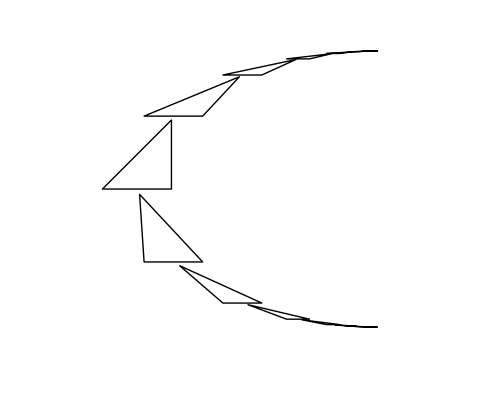

geometry_tools.projective
Work with projective space in numerical coordinates.
This module provides abstractions for various objects in projective geometry (points, lines, subspaces, projective transformations) and gives a unified framework for acting on these objects by projective transformations.
The underlying field can be either real or complex (or, in principle, any data type supported by numpy ndarrays, although this is largely untested).
Most of the power of the geometry_tools.projective module comes from
the fact that it is possible to build "composite" projective objects
out of arrays of subobjects, and then act on the entire composite
object by either a single projective transformation or an array of
projective transformations.
This means you can largely avoid using (slow!) native python loops, and instead rely on numpy's efficient numerical array computations.
For example, we can build an array of points, and act on all of those points by a single projective transformation:
import numpy as np
from geometry_tools import projective
# make three points, using coordinates in a standard affine chart
p1 = projective.Point([0, 1.0], chart_index=0)
p2 = projective.Point([1.0, 2.0], chart_index=0)
p3 = projective.Point([0.5, -0.1], chart_index=0)
# package these points together into a single projective object
points = projective.Point([p1, p2, p3])
# get a projective transformation acting on RP^2
transform = projective.Transformation(
np.array([[5.0, 0.0, 0.0],
[0.0, 1.0, 0.0],
[0.0, 0.0, 1/5.0]]), column_vectors=True)
(transform @ points).affine_coords()
array([[ 0. , 0.04 ],
[ 0.2 , 0.08 ],
[ 0.1 , -0.004]])
Here is a more complicated (but possibly more useful) example. We can create an array of points, and turn that into a single polygon object. Then, we can act on that polygon object by a collection of projective transformations to get a collection of polygons.
import numpy as np
from geometry_tools import projective, drawtools
# make a polygon out of several points
p1 = projective.Point([0., 0.], chart_index=0)
p2 = projective.Point([1., 0.], chart_index=0)
p3 = projective.Point([1., 1.], chart_index=0)
triangle = projective.Polygon([p1, p2, p3])
# make a diagonalizable projective transformation
aff_transform = projective.Transformation(
np.array([[1.8, 0.0, 0.0],
[0.0, 1.0, 0.0],
[0.0, 0.0, 1/1.8]]),
column_vectors=True
)
# conjugate this transformation so that its attracting/repelling points
# are at (4, -2) and (4,2)
non_aff = projective.Transformation(
np.array([[1.0, 0.0, 1.0],
[4.0, 1.0, 4.0],
[-2.0, 0.0, 2.0]]),
column_vectors=True
)
proj_transform = non_aff @ aff_transform @ non_aff.inv()
# construct the cyclic group generated by this projective transformation
rep = projective.ProjectiveRepresentation()
rep["a"] = proj_transform
# get proj_transform^n for |n| < 10, and apply these transformations
# to the triangle
powers = rep.freely_reduced_elements(10)
transformed_triangles = powers @ triangle
# draw a picture of the result
drawing = drawtools.ProjectiveDrawing()
drawing.draw_polygon(triangle)
drawing.draw_polygon(transformed_triangles)
drawing.show()
This code produces the image:

1"""Work with projective space in numerical coordinates. 2 3This module provides abstractions for various objects in projective 4geometry (points, lines, subspaces, projective transformations) and 5gives a unified framework for acting on these objects by projective 6transformations. 7 8The underlying field can be either real or complex (or, in principle, 9any data type supported by numpy ndarrays, although this is largely 10untested). 11 12Most of the power of the `geometry_tools.projective` module comes from 13the fact that it is possible to build "composite" projective objects 14out of arrays of subobjects, and then act on the entire composite 15object by either a single projective transformation or an array of 16projective transformations. 17 18This means you can largely avoid using (slow!) native python loops, 19and instead rely on numpy's efficient numerical array computations. 20 21For example, we can build an array of points, and act on all of those 22points by a single projective transformation: 23 24```python 25import numpy as np 26from geometry_tools import projective 27 28# make three points, using coordinates in a standard affine chart 29p1 = projective.Point([0, 1.0], chart_index=0) 30p2 = projective.Point([1.0, 2.0], chart_index=0) 31p3 = projective.Point([0.5, -0.1], chart_index=0) 32 33# package these points together into a single projective object 34points = projective.Point([p1, p2, p3]) 35 36# get a projective transformation acting on RP^2 37transform = projective.Transformation( 38 np.array([[5.0, 0.0, 0.0], 39 [0.0, 1.0, 0.0], 40 [0.0, 0.0, 1/5.0]]), column_vectors=True) 41 42(transform @ points).affine_coords() 43``` 44 45 array([[ 0. , 0.04 ], 46 [ 0.2 , 0.08 ], 47 [ 0.1 , -0.004]]) 48 49 50Here is a more complicated (but possibly more useful) example. We can 51create an array of points, and turn that into a single polygon 52object. Then, we can act on that polygon object by a collection of 53projective transformations to get a collection of polygons. 54 55```python 56 57import numpy as np 58from geometry_tools import projective, drawtools 59 60# make a polygon out of several points 61p1 = projective.Point([0., 0.], chart_index=0) 62p2 = projective.Point([1., 0.], chart_index=0) 63p3 = projective.Point([1., 1.], chart_index=0) 64 65triangle = projective.Polygon([p1, p2, p3]) 66 67# make a diagonalizable projective transformation 68aff_transform = projective.Transformation( 69 np.array([[1.8, 0.0, 0.0], 70 [0.0, 1.0, 0.0], 71 [0.0, 0.0, 1/1.8]]), 72 column_vectors=True 73) 74 75# conjugate this transformation so that its attracting/repelling points 76# are at (4, -2) and (4,2) 77non_aff = projective.Transformation( 78 np.array([[1.0, 0.0, 1.0], 79 [4.0, 1.0, 4.0], 80 [-2.0, 0.0, 2.0]]), 81 column_vectors=True 82) 83proj_transform = non_aff @ aff_transform @ non_aff.inv() 84 85# construct the cyclic group generated by this projective transformation 86rep = projective.ProjectiveRepresentation() 87rep["a"] = proj_transform 88 89# get proj_transform^n for |n| < 10, and apply these transformations 90# to the triangle 91powers = rep.freely_reduced_elements(10) 92transformed_triangles = powers @ triangle 93 94# draw a picture of the result 95drawing = drawtools.ProjectiveDrawing() 96drawing.draw_polygon(triangle) 97drawing.draw_polygon(transformed_triangles) 98 99drawing.show() 100 101``` 102 103This code produces the image: 104 105 106 107 """ 108 109import itertools 110from copy import copy 111 112import numpy as np 113from scipy.spatial import ConvexHull 114 115from . import utils 116 117if utils.SAGE_AVAILABLE: 118 from geometry_tools.utils import sagewrap 119 120from . import representation 121from .base import GeometryError 122 123class ProjectiveObject: 124 """Represent some object in projective geometry (possibly a composite 125 object). 126 127 The underlying data of a projective object is stored as a numpy 128 ndarray. The last `unit_ndims` ndims of this array describe a 129 *single* instance of this type of object. 130 131 For example, a `Polygon` object has `unit_ndims` equal to 2, since 132 a single `Polygon` is represented by an array of shape `(n,d)`, 133 where `n` is the number of vertices and `d` is the dimension of 134 the underlying vector space. So, a `Polygon` object whose 135 underlying array has shape `(5, 6, 4, 3)` represents a 5x6 array 136 of quadrilaterals in RP^2 (i.e. the projectivization of R^3). 137 138 """ 139 def __init__(self, proj_data, aux_data=None, dual_data=None, 140 unit_ndims=1, aux_ndims=0, dual_ndims=0, **kwargs): 141 """Parameters 142 ----------- 143 144 proj_data : ndarray 145 underyling data describing this projective object 146 147 aux_data : ndarray 148 auxiliary data describing this projective 149 object. Auxiliary data is any data which is in principle 150 computable from `proj_data`, but is convenient to keep as 151 part of the object definition for transformation purposes. 152 153 dual_data : ndarray 154 data describing this projective object which transforms 155 covariantly, i.e. as a dual vector in projective space. 156 157 unit_ndims : int 158 number of ndims of an array representing a "unit" version 159 of this object. For example, an object representing a 160 single point in hyperbolic space has `unit_ndims` 1, while 161 an object representing a line segment has `unit_ndims` 162 equal to 2. 163 164 aux_ndims : int 165 like `unit_ndims`, but for auxiliary data. 166 167 dual_ndims : int 168 like `unit_ndims`, but for covariant (dual) data. 169 170 base_ring : object 171 *(requires sage).* Base ring for matrix entries of the 172 underlying data for this object. This allows for exact 173 computations in projective space (at the cost of 174 performance) by supplying a ring that supports exact 175 computations. The dtype of the underlying data is 176 automatically converted to "object" if this is specified. 177 178 rational_approx : bool 179 *(requires sage).* If base_ring is specified, coerce 180 floating-point data to a rational approximation before 181 converting to the specified ring. This is useful for 182 combining computations with floating-point values with 183 computations in algebraic number fields. 184 185 """ 186 self.unit_ndims = unit_ndims 187 self.aux_ndims = aux_ndims 188 self.dual_ndims = dual_ndims 189 190 try: 191 self._construct_from_object(proj_data, **kwargs) 192 except TypeError: 193 self.set(proj_data, aux_data, dual_data, **kwargs) 194 195 @property 196 def dimension(self): 197 return self.proj_data.shape[-1] - 1 198 199 def _assert_geometry_valid(self, proj_data): 200 if proj_data is None and self.unit_ndims == 0: 201 return 202 203 try: 204 if proj_data.ndim < self.unit_ndims: 205 raise GeometryError( 206 ("{} expects an array with ndim at least {}, got array of shape {}" 207 ).format( 208 self.__class__.__name__, self.unit_ndims, proj_data.shape 209 ) 210 ) 211 except AttributeError: 212 raise GeometryError( 213 ("Data provided to {} must be a numpy array" 214 ).format(self.__class__.__name__) 215 ) 216 217 def _assert_aux_valid(self, aux_data): 218 if aux_data is None and self.aux_ndims == 0: 219 return 220 221 if aux_data.ndim < self.aux_ndims: 222 raise GeometryError( ("{} expects an auxiliary array with" 223 " ndim at least {}, got array of shape {}" ).format( 224 self.__class__.__name__, self.aux_ndims, 225 proj_data.shape ) ) 226 227 def _assert_dual_valid(self, dual_data): 228 if dual_data is None and self.dual_ndims == 0: 229 return 230 231 try: 232 if dual_data.ndim < self.dual_ndims: 233 raise GeometryError( ("{} expects a dual array with" 234 " ndim at least {}, got array of shape {}").format( 235 self.__class__.__name__, self.dual_ndims, 236 dual_data.shape) ) 237 except AttributeError: 238 raise GeometryError(("Dual data provided to {} must be a" 239 " numpy array").format(self.__class__.__name__)) 240 241 def _assert_data_consistent(self, proj_data, aux_data, dual_data): 242 proj_shape = aux_shape = dual_shape = None 243 244 if proj_data is not None: 245 proj_shape = proj_data.shape[:-self.unit_ndims] 246 if aux_data is not None: 247 aux_shape = aux_data.shape[:-self.aux_ndims] 248 if dual_data is not None: 249 dual_shape = dual_data.shape[:-self.dual_ndims] 250 251 shapes = [shape for shape in [proj_shape, aux_shape, dual_shape] 252 if shape is not None] 253 254 if len(shapes) == 0 or (np.array(shapes) == shapes[0]).all(): 255 return 256 257 raise GeometryError( ("Mismatched regular/aux/dual data shapes for {}" 258 ).self.__class__.__name__) 259 260 def _compute_aux_data(self, proj_data): 261 return None 262 263 def _construct_from_object(self, hyp_obj, **kwargs): 264 """if we're passed a projective object or an array of projective 265 objects, build a new one out of them 266 267 """ 268 269 type_error = TypeError( 270 "hyp_obj is not a projective object or an iterable of " 271 "projective objects." 272 ) 273 274 try: 275 self.set(hyp_obj.proj_data, 276 aux_data=hyp_obj.aux_data, 277 dual_data=hyp_obj.dual_data, 278 **kwargs) 279 return 280 except AttributeError: 281 pass 282 283 unrolled_obj = list(hyp_obj) 284 285 if len(unrolled_obj) == 0: 286 raise type_error 287 288 try: 289 hyp_array = np.array([obj.proj_data for obj in unrolled_obj]) 290 aux_array = np.array([obj.aux_data for obj in unrolled_obj]) 291 dual_array = np.array([obj.dual_data for obj in unrolled_obj]) 292 except AttributeError: 293 raise type_error 294 295 if (hyp_array == None).any(): 296 hyp_array = None 297 298 if (aux_array == None).any(): 299 aux_array = None 300 301 if (dual_array == None).any(): 302 dual_array = None 303 304 try: 305 self.set(hyp_array, aux_data=aux_array, 306 dual_data=dual_array, **kwargs) 307 except TypeError: 308 raise type_error 309 310 @property 311 def shape(self): 312 """Get the shape of the ndarray of "unit objects" this 313 ProjectiveObject represents. 314 315 Returns 316 ------- 317 tuple 318 319 320 """ 321 return self.proj_data.shape[:-1 * self.unit_ndims] 322 323 def reshape(self, shape): 324 old_proj_shape = self.proj_data.shape 325 proj_data = self.proj_data.reshape( 326 shape + old_proj_shape[-1*self.unit_ndims:] 327 ) 328 329 aux_data = None 330 if self.aux_data is not None: 331 old_aux_shape = self.aux_data.shape 332 aux_data = self.aux_data.reshape( 333 shape + old_aux_shape[-1*self.aux_ndims:] 334 ) 335 336 dual_data = None 337 if self.dual_data is not None: 338 old_dual_shape = self.dual_data.shape 339 dual_data = self.dual_data.reshape( 340 shape + old_dual_shape[-1*self.dual_ndims:] 341 ) 342 343 new_obj = ProjectiveObject(proj_data, 344 aux_data, 345 dual_data, 346 unit_ndims=self.unit_ndims, 347 aux_ndims=self.aux_ndims, 348 dual_ndims=self.dual_ndims) 349 350 return self.__class__(new_obj) 351 352 353 354 def set(self, proj_data=None, aux_data=None, 355 dual_data=None, **kwargs): 356 """set the underlying data of the hyperbolic object. 357 358 Subclasses may override this method to give special names to 359 portions of the underlying data. 360 361 Parameters 362 ---------- 363 proj_data : ndarray 364 underyling data representing this projective object. 365 366 aux_data : ndarray 367 underyling auxiliary data for this projective object. 368 369 dual_data : ndarray 370 underlying dual data for this projective object. 371 372 base_ring : object 373 *(requires sage).* Base ring for matrix entries of the 374 underlying data for this object. This allows for exact 375 computations in projective space (at the cost of 376 performance) by supplying a ring that supports exact 377 computations. The dtype of the underlying data is 378 automatically converted to "object" if this is specified. 379 380 rational_approx : bool 381 *(requires sage).* If base_ring is specified, coerce 382 floating-point data to a rational approximation before 383 converting to the specified ring. This is useful for 384 combining computations with floating-point values with 385 computations in algebraic number fields. 386 387 Raises 388 ------ 389 EnvironmentError 390 Raised if base_ring is specified but sage is not available 391 for import. 392 393 """ 394 395 #TODO: add "like" and "dtype" to kwargs 396 397 if proj_data is not None: 398 proj_data = np.array(proj_data) 399 400 self._assert_geometry_valid(proj_data) 401 402 if dual_data is not None: 403 dual_data = np.array(dual_data) 404 405 self._assert_dual_valid(dual_data) 406 407 if aux_data is None: 408 aux_data = self._compute_aux_data(proj_data) 409 410 self._assert_aux_valid(aux_data) 411 412 self.proj_data = proj_data 413 414 if self.aux_ndims > 0: 415 self.aux_data = aux_data 416 else: 417 self.aux_data = None 418 419 if self.dual_ndims > 0: 420 self.dual_data = dual_data 421 else: 422 self.dual_data = None 423 424 self._set_optional(**kwargs) 425 426 def _set_optional(self, base_ring=None, rational_approx=False): 427 self.base_ring = None 428 if base_ring is not None: 429 if not utils.SAGE_AVAILABLE: 430 raise EnvironmentError( 431 "Cannot specify base ring unless sage is available" 432 ) 433 self.change_base_ring(base_ring, inplace=True, 434 rational_approx=rational_approx) 435 436 def flatten_to_unit(self, unit=None): 437 """Get a flattened version of the projective object. 438 439 This method reshapes the underlying data of the projective 440 object to get a "flat" composite list of objects. For example, 441 if called on a Segment object whose underlying array has shape 442 (4, 5, 2, 3), this method uses the `unit_ndims` data member to 443 interprets this array as an array of segments with shape 444 (4,5), and returns a Segment object whose underlying array has 445 shape (20, 2, 3). 446 447 Parameters 448 ---------- 449 450 unit : int 451 the number of ndims to treat as a "unit" when flattening 452 this object into units. 453 454 """ 455 456 aux_unit = unit 457 dual_unit = unit 458 if unit is None: 459 unit = self.unit_ndims 460 aux_unit = self.aux_ndims 461 dual_unit = self.dual_ndims 462 463 flattened = copy(self) 464 new_shape = (-1,) + self.proj_data.shape[-1 * unit:] 465 new_proj_data = np.reshape(self.proj_data, new_shape) 466 467 new_aux_data = None 468 if self.aux_data is not None: 469 new_aux_shape = (-1,) + self.aux_data.shape[-1 * aux_unit:] 470 new_aux_data = np.reshape(self.aux_data, new_aux_shape) 471 472 new_dual_data = None 473 if self.dual_data is not None: 474 new_dual_shape = (-1,) + self.dual_data.shape[-1 * dual_unit:] 475 new_dual_data = np.reshape(self.dual_data, new_dual_shape) 476 477 flattened.set(new_proj_data, aux_data=new_aux_data, 478 dual_data=new_dual_data) 479 480 return flattened 481 482 def flatten_to_aux(self): 483 return self.flatten_to_unit(self.aux_ndims) 484 485 def __repr__(self): 486 return "({}, {})".format( 487 self.__class__, 488 self.proj_data.__repr__() 489 ) 490 491 def __str__(self): 492 return "{} with data:\n{}".format( 493 self.__class__.__name__, self.proj_data.__str__() 494 ) 495 496 def __getitem__(self, item): 497 return self.__class__(self.proj_data[item]) 498 499 def __setitem__(self, key, value): 500 self.proj_data[key] = self.__class__(value).proj_data 501 502 def __len__(self): 503 if len(self.proj_data.shape) == self.unit_ndims: 504 raise TypeError("len() of unsized object") 505 506 return len(self.proj_data) 507 508 def astype(self, dtype): 509 new_proj = self.proj_data.astype(dtype) 510 new_aux = None 511 new_dual = None 512 513 if self.aux_data is not None: 514 new_aux = self.aux_data.astype(dtype) 515 516 if self.dual_data is not None: 517 new_dual = self.dual_data.astype(dtype) 518 519 520 newobj = ProjectiveObject(new_proj, new_aux, new_dual, 521 unit_ndims=self.unit_ndims, 522 aux_ndims=self.aux_ndims, 523 dual_ndims=self.dual_ndims) 524 525 return self.__class__(newobj) 526 527 def change_base_ring(self, base_ring, inplace=False, **kwargs): 528 if not utils.SAGE_AVAILABLE: 529 raise EnvironmentError( 530 "Cannot change base ring unless sage is available" 531 ) 532 533 newproj = sagewrap.change_base_ring(self.proj_data, base_ring, 534 **kwargs) 535 536 newaux = None 537 if self.aux_data is not None: 538 newaux = sagewrap.change_base_ring(self.aux_data, base_ring, 539 **kwargs) 540 541 newdual = None 542 if self.dual_data is not None: 543 newdual = sagewrap.change_base_ring(self.dual_data, base_ring, 544 **kwargs) 545 546 if not inplace: 547 newobj = ProjectiveObject(newproj, newaux, newdual, 548 unit_ndims=self.unit_ndims, 549 aux_ndims=self.aux_ndims, 550 dual_ndims=self.dual_ndims) 551 return self.__class__(newobj) 552 553 self.proj_data = newproj 554 self.aux_data = newaux 555 self.dual_data = newdual 556 557 def projective_coords(self, proj_data=None, **kwargs): 558 """Wrapper for ProjectiveObject.set, since underlying coordinates are 559 projective.""" 560 if proj_data is not None: 561 self.set(proj_data, **kwargs) 562 563 return self.proj_data 564 565 def affine_coords(self, aff_data=None, chart_index=0, **kwargs): 566 """Get or set affine coordinates for this object. 567 568 Parameters 569 ---------- 570 aff_data : ndarray 571 if not `None`, coordinate data for this point in an affine 572 chart. 573 574 chart_index : int 575 index of standard affine chart to get/set coordinates in 576 577 Returns 578 ------- 579 ndarray 580 affine coordinates of this Point, in the specified 581 standard affine chart. 582 583 """ 584 if aff_data is not None: 585 self.set(projective_coords(aff_data, chart_index=chart_index), 586 **kwargs) 587 588 return affine_coords(self.proj_data, chart_index=chart_index, 589 column_vectors=False) 590 591 @staticmethod 592 def _assert_prop_equal(objects, propname): 593 594 if len(objects) == 0: 595 return 596 597 properties = np.array([obj.__dict__[propname] 598 for obj in objects]) 599 600 if (properties[0] != properties).any(): 601 raise GeometryError( 602 f"{propname} does not match for objects." 603 ) 604 605 606 @classmethod 607 def combine(cls, to_combine): 608 """Construct a new ProjectiveObject of combining the 609 data of an array of objects. 610 611 All of the objects in the given array will be flattened to 612 unit dimensions before combining. If dimensions of the 613 underlying data do not match, this will raise an error. 614 615 Parameters 616 ---------- 617 to_combine : array of ProjectiveObjects with a common type 618 619 Returns 620 ------- 621 ProjectiveObject 622 Object of the appropriate type containing (flattened) 623 combined data. 624 625 """ 626 if len(to_combine) == 0: 627 return 628 629 cls._assert_prop_equal(to_combine, "unit_ndims") 630 cls._assert_prop_equal(to_combine, "aux_ndims") 631 cls._assert_prop_equal(to_combine, "dual_ndims") 632 633 unit_ndims = to_combine[0].unit_ndims 634 aux_ndims = to_combine[0].aux_ndims 635 dual_ndims = to_combine[0].dual_ndims 636 637 flattened_objs = [ 638 obj.flatten_to_unit() 639 for obj in to_combine 640 ] 641 642 # first make a generic ProjectiveObject 643 new_data = np.concatenate( 644 [obj.proj_data for obj in flattened_objs], 645 axis=-(unit_ndims+1) 646 ) 647 new_aux = None 648 new_dual = None 649 650 if aux_ndims > 0: 651 new_data = np.concatenate( 652 [obj.aux_data for obj in flattened_objs], 653 axis=-(aux_ndims+1) 654 ) 655 new_aux = np.concatenate([flat_self.aux_data, flat_other.aux_data], 656 axis=-(self.aux_ndims+1)) 657 if dual_ndims > 0: 658 new_data = np.concatenate( 659 [obj.dual_data for obj in flattened_objs], 660 axis=-(dual_ndims+1) 661 ) 662 663 newObj = ProjectiveObject(new_data, new_aux, new_dual, 664 unit_ndims=unit_ndims, 665 aux_ndims=aux_ndims, 666 dual_ndims=dual_ndims) 667 668 # construct an object with the correct type from this underlying data 669 return cls(newObj) 670 671 def set_ndims(self, unit_ndims=None, aux_ndims=None, dual_ndims=None): 672 if unit_ndims is not None: 673 self.unit_ndims = unit_ndims 674 675 if aux_ndims is not None: 676 self.aux_ndims = aux_ndims 677 678 if dual_ndims is not None: 679 self.dual_ndims = dual_ndims 680 681 682class Point(ProjectiveObject): 683 """A point (or collection of points) in projective space. 684 """ 685 686 def __init__(self, point, chart_index=None, **kwargs): 687 """Parameters 688 ---------- 689 point : ndarray or ProjectiveObject or iterable 690 Data to use to construct a Point object. If `point` is an 691 `ndarray`, then it is interpreted as data in either 692 projective or affine coordinates, depending on whether 693 `chart_index` is specified. If `point` is a 694 `ProjectiveObject`, then construct a `Point` from the 695 underlying data of that object. 696 chart_index : int 697 if `None` (default), then assume that `point` is data in 698 projective coordinates, or a ProjectiveObject. Otherwise, 699 interpret `point` as data in affine coordinates, and use 700 `chart_index` as the index of the standard affine chart 701 those coordinates are in. 702 703 """ 704 705 self.unit_ndims = 1 706 self.aux_ndims = 0 707 self.dual_ndims = 0 708 709 try: 710 self._construct_from_object(point, **kwargs) 711 return 712 except TypeError: 713 pass 714 715 if chart_index is None: 716 self.projective_coords(point, **kwargs) 717 else: 718 self.affine_coords(point, chart_index, **kwargs) 719 720 def in_affine_chart(self, index): 721 return self.proj_data[..., index] != 0 722 723class PointCollection(Point): 724 def __init__(self, *args, unit_ndims=2, **kwargs): 725 Point.__init__(self, *args, **kwargs) 726 self.unit_ndims = unit_ndims 727 728class PointPair(Point): 729 """A pair of points (or a composite object consisting of a collection 730 of pairs of points) in projective space. 731 732 This is mostly useful as an interface for subclasses which provide 733 more involved functionality. 734 """ 735 def __init__(self, endpoint1, endpoint2=None, unit_ndims=2, 736 aux_ndims=0, dual_ndims=0, **kwargs): 737 """If `endpoint2` is `None`, interpret `endpoint1` as either an 738 `ndarray` of shape (2, ..., n) (where n is the dimension of 739 the underlying vector space), or else a composite `Point` 740 object which can be unpacked into two Points (which may 741 themselves be composite). 742 743 If `endpoint2` is given, then both `endpoint1` and `endpoint2` 744 can be used to construct `Point` objects, which serve as the 745 endpoints for this pair of points. 746 747 Parameters 748 ---------- 749 endpoint1 : Point or ndarray 750 One (or both) endpoints of the point pair 751 endpoint2 : Point or ndarray 752 The other endpoint of the point pair. If `None`, 753 `endpoint1` contains the data for both points in the pair. 754 755 """ 756 self.set_ndims(unit_ndims, aux_ndims, dual_ndims) 757 758 if endpoint2 is None: 759 try: 760 self._construct_from_object(endpoint1, **kwargs) 761 return 762 except (AttributeError, TypeError, GeometryError): 763 pass 764 765 self.set_endpoints(endpoint1, endpoint2, **kwargs) 766 767 @property 768 def endpoints(self): 769 return self.proj_data[..., :2, :] 770 771 def set_endpoints(self, endpoint1, endpoint2=None, **kwargs): 772 """Set the endpoints of a segment. 773 774 If `endpoint2` is `None`, expect `endpoint1` to be an array of 775 points with shape `(..., 2, n)`. Otherwise, expect `endpoint1` 776 and `endpoint2` to be arrays of points with the same shape. 777 778 Parameters 779 ---------- 780 endpoint1 : Point or ndarray 781 One (or both) endpoints of the point pair 782 endpoint2 : Point or ndarray 783 The other endpoint of the point pair. If `None`, 784 `endpoint1` contains the data for both points in the pair. 785 786 """ 787 if endpoint2 is None: 788 self.set(Point(endpoint1).proj_data, **kwargs) 789 return 790 791 pt1 = Point(endpoint1) 792 pt2 = Point(endpoint2) 793 self.set(np.stack([pt1.proj_data, pt2.proj_data], axis=-2), **kwargs) 794 795 def get_endpoints(self): 796 """Get a Point representing the endpoints of this pair 797 798 Returns 799 ------- 800 Point 801 A composite Point object representing the endpoints of 802 this (possibly composite) PointPair 803 804 """ 805 return Point(self.endpoints) 806 807 def get_end_pair(self): 808 """Return a pair of point objects, one for each endpoint 809 810 Returns 811 ------- 812 tuple 813 Tuple of the form `(endpoint1, endpoint2)`, where 814 `endpoint1` and `endpoint2` are (possibly composite) 815 `Point` objects representing the endpoints of this pair 816 817 """ 818 return (Point(self.endpoints[..., 0, :]), 819 Point(self.endpoints[..., 1, :])) 820 821 def endpoint_affine_coords(self, chart_index=0): 822 """Get endpoints of this segment in affine coordinates 823 824 Parameters 825 ---------- 826 chart_index : int 827 Index of the standard affine chart to take coordinates in 828 829 Returns 830 ------- 831 ndarray 832 Affine coordinates of the endpoints of this pair of 833 points. 834 835 """ 836 return self.get_endpoints().affine_coords(chart_index=chart_index) 837 838 def endpoint_projective_coords(self): 839 """Get endpoints of this segment in projective coordinates. 840 841 Returns 842 ------- 843 ndarray 844 Projective coordinates of the endpoints of this pair of 845 points. 846 847 """ 848 return self.get_endpoints().projective_coords() 849 850class Polygon(Point): 851 """A finite-sided polygon in projective space. 852 """ 853 def __init__(self, vertices, aux_data=None, **kwargs): 854 """ 855 Parameters 856 ---------- 857 vertices : Point or ndarray or iterable 858 vertices of the polygon, as either an ndarray or a 859 composite Point object (provided in the proper order for 860 this polygon). 861 862 aux_data : PointPair or ndarray 863 Data to use to construct the edges of the polygon. If 864 `None`, use the vertex data to compute the edge data. 865 866 """ 867 ProjectiveObject.__init__(self, vertices, aux_data, 868 unit_ndims=2, aux_ndims=3, 869 **kwargs) 870 871 def in_standard_chart(self): 872 coord_signs = np.sign(self.projective_coords()[..., 0]) 873 return np.all(coord_signs == 1, axis=-1) | np.all(coord_signs == -1, axis=-1) 874 875 @property 876 def vertices(self): 877 return self.proj_data 878 879 @property 880 def edges(self): 881 return self.aux_data 882 883 def _compute_aux_data(self, proj_data): 884 segments = PointPair(proj_data, np.roll(proj_data, -1, axis=-2)) 885 return segments.proj_data 886 887 def get_edges(self): 888 """Get the edges of this polygon 889 890 Returns 891 ------- 892 PointPair 893 Edges of this polygon, as a composite PointPair object. 894 895 """ 896 return PointPair(self.edges) 897 898 def get_vertices(self): 899 """Get the vertices of the polygon. 900 901 Returns 902 ------- 903 Point 904 Vertices of this polygon, as a composite Point object. 905 906 """ 907 return Point(self.proj_data) 908 909class Simplex(Point): 910 """An n-simplex in projective space. 911 """ 912 def __init__(self, vertices, **kwargs): 913 """ 914 Parameters 915 ---------- 916 vertices : ProjectiveObject or ndarray 917 Data giving the vertices of the simplex (or a composite of 918 several simplices) 919 920 """ 921 ProjectiveObject.__init__(self, vertices, unit_ndims=2, **kwargs) 922 923 @property 924 def n(self): 925 """Number of vertices in the simplex. 926 """ 927 return self.proj_data.shape[-2] 928 929 def skeleton(self, k): 930 """Get the k-skeleton of this simplex, as a composite Simplex. 931 932 Parameters 933 ---------- 934 k : int 935 Dimension of the skeleton to get 936 937 Returns 938 ------- 939 Simplex 940 Composite Simplex object, with one subobject for each 941 k-dimensional face of this simplex. 942 943 """ 944 indices = list(itertools.combinations(range(self.n), k)) 945 return Simplex(self.proj_data[..., indices, :]) 946 947 def faces(self): 948 """Get the codimension-1 faces of the simplex. 949 950 Alias for self.skeleton(n - 1), where n is the number of 951 vertices in this simplex. 952 953 """ 954 return self.skeleton(self.n - 1) 955 956 def edges(self): 957 """Get the edges of the simplex. 958 959 Alias for PointPair(self.skeleton(2)).""" 960 return PointPair(self.skeleton(2)) 961 962 def vertices(self): 963 """Get the vertices of this simplex as a Point object. 964 """ 965 return Point(self) 966 967class Subspace(ProjectiveObject): 968 """A projective subspace (or composite object consisting of projective 969 subspaces with the same dimension) 970 971 """ 972 def __init__(self, proj_data, **kwargs): 973 """ 974 Parameters 975 ---------- 976 proj_data : ProjectiveObject or ndarray 977 data specifying a spanning set for this projective 978 subspace. These are presumed to be a set of linearly 979 independent vectors. 980 981 """ 982 ProjectiveObject.__init__(self, proj_data, unit_ndims=2, **kwargs) 983 984 @property 985 def n(self): 986 """Dimension of the vector space underlying this subspace. 987 """ 988 return self.proj_data.shape[-2] 989 990 def intersect(self, other, broadcast="elementwise"): 991 """Get a subspace giving the intersection of self with other. 992 993 All intersections are presumed to be transverse. So, the 994 dimension of the underlying vector space of the returned 995 subspace is always: (dimension of self) + (dimension of other) 996 - (dimension of ambient vector space). 997 998 Parameters 999 ---------- 1000 other : Subspace or ndarray 1001 Subspace to intersect with. 1002 1003 broadcast : {"elementwise", "pairwise"} 1004 If "elementwise" (the default), and self/other are 1005 composite objects, then compute the element-by-element 1006 intersection. For this to work properly, self and other 1007 must have the same shape (as composite objects). 1008 1009 If "pairwise", compute intersections between every 1010 subspace in self and every subspace in other. If self has 1011 a (composite) shape (N1, N2, ... Ni) and other has 1012 composite shape (M1, M2, ..., Mj), then the returned 1013 object has composite shape (N1, N2, ... Ni, M1, M2, ..., 1014 Mj). 1015 1016 Returns 1017 ------- 1018 Subspace 1019 Intersection of self and other. 1020 1021 """ 1022 1023 other_obj = Subspace(other) 1024 1025 if broadcast == "elementwise": 1026 p1, p2 = self.proj_data, other_obj.proj_data 1027 elif broadcast == "pairwise": 1028 p1, p2 = utils.broadcast_match(self.proj_data, 1029 other_obj.proj_data, 2) 1030 else: 1031 raise ValueError(f"Unrecognized broadcast rule: '{broadcast}'") 1032 1033 spans = np.concatenate((p1, p2), axis=-2) 1034 1035 kernel_coeffs = utils.kernel(spans.swapaxes(-1, -2)) 1036 subspace_coeffs = kernel_coeffs[..., :self.n, :].swapaxes(-1, -2) 1037 1038 return Subspace(utils.matrix_product(subspace_coeffs, p1)) 1039 1040class ConvexPolygon(Polygon): 1041 """A finite-sided convex polygon in projective space. 1042 """ 1043 1044 def __init__(self, vertices, aux_data=None, dual_data=None, **kwargs): 1045 r"""When providing point data for this polygon, non-extreme points 1046 (i.e. points in the interior of the convex hull) are 1047 discarded. To determine which points lie in the interior of 1048 the convex hull, the constructor either: 1049 1050 - uses the provided `dual_data` to determine an affine 1051 chart in which the convex polygon lies (this chart is 1052 the complement of the hyperplane specified in 1053 `dual_data`), or 1054 1055 - interprets the projective coordinates of the provided points 1056 as preferred lifts of those points in $\mathbb{R}^n$, and 1057 computes an affine chart containing the projectivization of 1058 the convex hull of those lifts. 1059 1060 Parameters 1061 ---------- 1062 vertices : Point or ndarray 1063 points contained in this polygon 1064 aux_data : PointPair or None 1065 Data to construct the edges of this polygon. If `None`, 1066 use vertex data to construct edge data. 1067 dual_data : ProjectiveObject 1068 Dual vector specifying an affine chart containing every 1069 point in this convex polygon. If `None`, then compute a 1070 dual vector using lifts of the vertex data. 1071 1072 """ 1073 1074 ProjectiveObject.__init__(self, vertices, aux_data=aux_data, 1075 dual_data=dual_data, unit_ndims=2, 1076 aux_ndims=3, dual_ndims=1, **kwargs) 1077 def add_points(self, points, in_place=False): 1078 """Add points to an existing convex polygon. 1079 1080 Parameters 1081 ---------- 1082 points : Point or ndarray 1083 Points to add to the convex polygon. Redundant points 1084 (lying in the interior of the convex hull) will be 1085 discarded. 1086 in_place : bool 1087 if `True`, modify this convex polygon object in-place 1088 instead of returning a new one. 1089 1090 Raises 1091 ------ 1092 GeometryError 1093 Raised if points are added to a composite ConvexPolygon 1094 (currently unsupported) 1095 1096 Returns 1097 ------- 1098 ConvexPolygon 1099 if `in_place` is `False`, return a modified ConvexPolygon 1100 object with the new points added. 1101 1102 """ 1103 1104 if len(self.proj_data.shape) > 2: 1105 raise GeometryError( 1106 "Adding new points to a composite ConvexPolygon object is currently" 1107 " unsupported." 1108 ) 1109 1110 to_add = Point(points) 1111 new_data = np.concatenate((self.proj_data, to_add.proj_data), axis=-2) 1112 1113 if in_place: 1114 self.set(new_data) 1115 return 1116 1117 new_poly = ConvexPolygon(new_data) 1118 return new_poly 1119 1120 def _convexify(self): 1121 if len(self.proj_data.shape) > 2: 1122 raise GeometryError( 1123 "Cannot auto-convexify a composite ConvexPolygon object." 1124 ) 1125 1126 dim = self.proj_data.shape[-1] 1127 self.dual_data = utils.find_positive_functional(self.proj_data) 1128 1129 to_std_aff = utils.invert(utils.find_isometry(utils.identity(dim), 1130 self.dual_data)) 1131 1132 standardized_coords = Point( 1133 self.proj_data @ to_std_aff 1134 ).affine_coords(chart_index=0) 1135 1136 vertex_indices = ConvexHull(standardized_coords).vertices 1137 1138 self.proj_data = self.proj_data[vertex_indices] 1139 self.aux_data = self._compute_aux_data(self.proj_data) 1140 1141 def set(self, proj_data, aux_data=None, dual_data=None, **kwargs): 1142 ProjectiveObject.set(self, proj_data, aux_data, dual_data, **kwargs) 1143 if dual_data is None: 1144 self._convexify() 1145 1146class Transformation(ProjectiveObject): 1147 """A projective transformation (or a composite object consisting of a 1148 collection of projective transformations). 1149 """ 1150 def __init__(self, proj_data, column_vectors=False, **kwargs): 1151 """By default, the underlying data for a projective 1152 transformation is a *row matrix* (or an ndarray of row 1153 matrices), acting on vectors on the *right*. 1154 1155 Parameters 1156 ---------- 1157 proj_data : ProjectiveObject or ndarray 1158 Data to use to construct a projective transformation (or 1159 array of projective transformations). 1160 column_vectors : bool 1161 If `True`, interpret proj_data as a *column matrix* acting 1162 on the left. Otherwise proj_data gives a *row matrix*. 1163 """ 1164 self.unit_ndims = 2 1165 self.aux_ndims = 0 1166 self.dual_ndims = 0 1167 1168 try: 1169 self._construct_from_object(proj_data, **kwargs) 1170 except TypeError: 1171 if column_vectors: 1172 self.set(proj_data.swapaxes(-1,-2), **kwargs) 1173 else: 1174 self.set(proj_data, **kwargs) 1175 1176 def _assert_geometry_valid(self, proj_data): 1177 ProjectiveObject._assert_geometry_valid(self, proj_data) 1178 if (len(proj_data.shape) < 2 or 1179 proj_data.shape[-2] != proj_data.shape[-1]): 1180 raise GeometryError( 1181 ("Projective transformation must be ndarray of n x n" 1182 " matrices, got array with shape {}").format( 1183 proj_data.shape)) 1184 1185 @property 1186 def matrix(self): 1187 return self.proj_data 1188 1189 def _apply_to_data(self, proj_data, broadcast, unit_ndims=1, dual=False): 1190 matrix = self.matrix 1191 if dual: 1192 matrix = utils.invert(matrix).swapaxes(-1, -2) 1193 return utils.matrix_product(proj_data, 1194 matrix, 1195 unit_ndims, self.unit_ndims, 1196 broadcast=broadcast) 1197 1198 def apply(self, proj_obj, broadcast="elementwise"): 1199 """Apply this transformation to another object in projective space. 1200 1201 Parameters 1202 ---------- 1203 proj_obj : ProjectiveObject or ndarray 1204 Projective object to apply this transformation to. This object 1205 may be composite. 1206 broadcast : string 1207 Broadcasting behavior for applying composite 1208 transformation objects. If "elementwise", then the shape 1209 of this (composite) transformation object and the shape of 1210 the (composite) object to apply transformations to need to 1211 be broadcastable. If "pairwise", then apply every element 1212 of this (composite) transformation object to every element 1213 of the target object (i.e. take an outer product). 1214 1215 Returns 1216 ------- 1217 ProjectiveObject 1218 Transformed (possibly composite) projective object. The 1219 type of this object is the same type as the original 1220 (untransformed) object. If the original object was 1221 provided as an ndarray, then the returned object has type 1222 ProjectiveObject. 1223 1224 """ 1225 new_obj = copy(proj_obj) 1226 1227 try: 1228 proj_data = new_obj.proj_data 1229 proj_product = None 1230 if proj_data is not None: 1231 proj_product = self._apply_to_data(new_obj.proj_data, broadcast, 1232 new_obj.unit_ndims) 1233 1234 aux_data = new_obj.aux_data 1235 aux_product = None 1236 if aux_data is not None: 1237 aux_product = self._apply_to_data(new_obj.aux_data, broadcast, 1238 new_obj.aux_ndims) 1239 1240 dual_data = new_obj.dual_data 1241 dual_product = None 1242 if dual_data is not None: 1243 dual_product = self._apply_to_data(new_obj.dual_data, broadcast, 1244 new_obj.dual_ndims) 1245 1246 new_obj.set(proj_data=proj_product, 1247 aux_data=aux_product, 1248 dual_data=dual_product) 1249 1250 return new_obj 1251 except AttributeError: 1252 pass 1253 1254 #otherwise, it's an array of vectors which we'll interpret as 1255 #some kind of hyperbolic object 1256 product = self._apply_to_data(proj_obj, broadcast) 1257 return self._data_to_object(product) 1258 1259 def eigenvector(self, eigenvalue=None): 1260 """Get a point corresponding to an eigenvector with the given 1261 eigenvalue. 1262 1263 Parameters 1264 ---------- 1265 eigenvalue : float 1266 Eigenvalue for the returned eigenvector. If None, return 1267 an arbitrary eigenvector. 1268 1269 Returns 1270 ------- 1271 Point 1272 Point object in projective space giving an eigenvector for 1273 the given eigenvalue. The projective coordinates of this 1274 point will be degenerate (i.e. zero) if no nonzero 1275 eigenvector with this eigenvalue exists. 1276 1277 """ 1278 eigvals, eigvecs = utils.eig(self.proj_data.swapaxes(-1, -2)) 1279 eigvec_coords = utils.zeros(self.proj_data.shape[:-1]) 1280 1281 ic = np.ones_like(eigvals) 1282 if eigenvalue is not None: 1283 ic = np.isclose(eigvals, eigenvalue) 1284 1285 where_ic = ic.nonzero() 1286 1287 if len(where_ic) == 1: 1288 if len(where_ic[0]) > 0: 1289 eigvec_coords = (eigvecs.T)[where_ic[0][0]] 1290 return Point(eigvec_coords) 1291 raise GeometryError( 1292 ("Transformation does not have {} as an approximate eigenvalue").format( 1293 eigenvalue) 1294 ) 1295 1296 unind, indind = np.unique(np.array(where_ic[:-1]).T, 1297 return_index=True, axis=0) 1298 1299 eigvec_coords[tuple([*unind.T])] = eigvecs.swapaxes(-1,-2)[ 1300 tuple([*(np.array(where_ic).T)[indind].T]) 1301 ] 1302 1303 return Point(eigvec_coords) 1304 1305 def commute(self, other, broadcast="elementwise", tol=1e-8): 1306 1307 s_inv = self.inv() 1308 o_inv = other.inv() 1309 1310 if broadcast == "pairwise": 1311 slen = len(s_inv.shape) 1312 olen = len(o_inv.shape) 1313 s_inv = s_inv.reshape(s_inv.shape + (1,)*olen) 1314 o_inv = o_inv.reshape((1,)*slen + o_inv.shape) 1315 1316 commutator = self.apply(other, broadcast=broadcast) 1317 commutator = commutator.apply(s_inv, broadcast="elementwise") 1318 commutator = commutator.apply(o_inv, broadcast="elementwise") 1319 1320 return np.all( 1321 np.isclose(commutator.proj_data, 1322 np.identity(self.dimension + 1), 1323 atol=tol), 1324 axis=(-1, -2) 1325 ) 1326 1327 1328 1329 def diagonalize(self, return_inv=False, **kwargs): 1330 """Get a matrix diagonalizing this projective transformation. 1331 1332 If self is a diagonalizable transformation, this function 1333 returns a Transformation object representing a projective 1334 transformation M such that M.inv() @ (self) @ M is diagonal. 1335 1336 No claims are made about the behavior of this function if M is 1337 not diagonalizable. The function may throw an error, or it may 1338 return nonsense - no effort has been made on this front. 1339 1340 Parameters 1341 ---------- 1342 return_inv : bool 1343 If True, return a pair of Transformations, giving M and 1344 M.inv(). Otherwise, just return M. 1345 1346 Returns 1347 ------- 1348 Transformation 1349 Projective transformation M diagonalizing this 1350 transformation. 1351 1352 """ 1353 1354 _, conj = utils.eig(self.proj_data.swapaxes(-1, -2), 1355 **kwargs) 1356 1357 conj_transform = Transformation(conj, column_vectors=True) 1358 1359 if not return_inv: 1360 return conj_transform 1361 1362 return conj_transform, conj_transform.inv() 1363 1364 def _data_to_object(self, data): 1365 return ProjectiveObject(data) 1366 1367 def inv(self): 1368 """Get the inverse of this transformation. 1369 1370 Returns 1371 ------- 1372 ProjectiveTransformation 1373 Inverse of this transformation. 1374 """ 1375 return self.__class__(utils.invert(self.matrix)) 1376 1377 def __matmul__(self, other): 1378 return self.apply(other) 1379 1380class ProjectiveRepresentation(representation.Representation): 1381 """A representation (of a free group) lying in PGL(V). Passing words 1382 (in the generators) to this representation yields `Transformation` 1383 objects. 1384 """ 1385 1386 @staticmethod 1387 def wrap_func(numpy_matrix): 1388 return Transformation(numpy_matrix, column_vectors=True) 1389 1390 @staticmethod 1391 def unwrap_func(wrapped_matrix): 1392 return wrapped_matrix.matrix.T 1393 1394 @staticmethod 1395 def array_wrap_func(numpy_array): 1396 return Transformation(numpy_array, column_vectors=True) 1397 1398 def transformations(self, words): 1399 """Get a composite transformation, representing a sequence of words in 1400 the generators for this representation. 1401 1402 Parameters 1403 ---------- 1404 words : iterable of strings 1405 Sequence of words to apply this representation to. 1406 1407 Returns 1408 ------- 1409 Transformation 1410 Composite transformation object containing one 1411 transformation for each word in `words`. 1412 1413 """ 1414 return self.elements(words) 1415 1416def hyperplane_coordinate_transform(normal): 1417 r"""Find an orthogonal matrix taking the affine chart $\{\vec{x} : 1418 \vec{x} \cdot \vec{n} \ne 0\}$ to the standard affine chart 1419 $\{\vec{x} = (x_0, \ldots, x_n) : x_0 \ne 0\}$. 1420 1421 Parameters 1422 ---------- 1423 normal : array 1424 The vector $\vec{n}$, normal to some hyperplane in R^n. 1425 1426 Returns 1427 ------- 1428 Transformation 1429 Projective transformation (orthogonal in the standard inner 1430 product on R^n) taking the desired affine chart to the 1431 standard chart with index 0. 1432 1433 """ 1434 mat = utils.find_definite_isometry(normal) 1435 return Transformation(mat, column_vectors=True).inv() 1436 1437def affine_coords(points, chart_index=None, column_vectors=False): 1438 """Get affine coordinates for an array of points in projective space 1439 in one of the standard affine charts. 1440 1441 Parameters 1442 ---------- 1443 points: ndarray 1444 `ndarray` of points in projective space. the last dimension is 1445 assumed to be the same as the dimension of the underlying 1446 vector space. 1447 1448 chart_index: int 1449 which of the n affine charts to take coordinates in. If 1450 `None`, determine the chart automatically. 1451 1452 column_vectors: bool 1453 if `True`, interpret the second-to-last index as the dimension 1454 of the underlying vector space. 1455 1456 Returns 1457 ------- 1458 ndarray 1459 If chart_index is specified, return an array of points in 1460 affine coordinates in that chart. Otherwise, return a tuple 1461 `(affine, chart_index)`, where `chart_index` is the affine 1462 chart used. 1463 1464 If `column_vectors` is `False` (the default), then the last 1465 index of the returned array is the dimension of the affine 1466 space. Otherwise, the second-to-last index is the dimension of 1467 affine space. 1468 1469 """ 1470 apoints = np.array(points) 1471 1472 if column_vectors: 1473 apoints = apoints.swapaxes(-1, -2) 1474 1475 _chart_index = chart_index 1476 1477 #auto-determine chart 1478 if chart_index is None: 1479 _chart_index = np.argmax( 1480 np.min(np.abs(apoints), axis=tuple(range(len(apoints.shape) - 1))) 1481 ) 1482 1483 if (apoints[..., _chart_index].astype('float64') == 0).any(): 1484 if chart_index is not None: 1485 raise GeometryError( 1486 "points don't lie in the specified affine chart" 1487 ) 1488 else: 1489 raise GeometryError( 1490 "points don't lie in any standard affine chart" 1491 ) 1492 1493 affine = np.delete( 1494 (apoints.T / apoints.T[_chart_index]).T, 1495 _chart_index, axis=-1 1496 ) 1497 1498 if column_vectors: 1499 affine = affine.swapaxes(-1, -2) 1500 1501 if chart_index is None: 1502 return (affine, _chart_index) 1503 else: 1504 return affine 1505 1506def projective_coords(points, chart_index=0, column_vectors=False): 1507 """Get projective coordinates for points in affine space 1508 1509 Parameters 1510 ---------- 1511 points : ndarray or sequence 1512 Points in affine coordinates. The last dimension of the array 1513 is the dimension of affine space. 1514 1515 chart_index: int 1516 Index of the affine chart we assume these points are lying in 1517 1518 column_vectors: bool 1519 If `True`, interpret the second-to-last index as the dimension 1520 of affine space. 1521 1522 Returns 1523 ------- 1524 ndarray 1525 Projective coordinates of the given points. The last dimension 1526 of the array is the dimension of the underlying vector space 1527 (or the second-to-last dimension, if `column_vectors` is 1528 `True`). 1529 1530 """ 1531 coords = np.array(points) 1532 1533 if column_vectors: 1534 coords = coords.swapaxes(-1, -2) 1535 1536 result = utils.zeros(coords.shape[:-1] + (coords.shape[-1] + 1,), 1537 like=coords) 1538 1539 indices = np.arange(coords.shape[-1]) 1540 indices[chart_index:] += 1 1541 1542 result[..., indices] = coords 1543 1544 # wrap literal numerical 1 (for sage) 1545 one = utils.number(1, like=coords) 1546 result[..., chart_index] = one 1547 1548 if column_vectors: 1549 result = result.swapaxes(-1, -2) 1550 1551 return result 1552 1553def identity(dimension, **kwargs): 1554 """Get the identity projective transformation. 1555 1556 Parameters 1557 ---------- 1558 dimension : int 1559 Dimension of the projective space to act on. 1560 1561 Returns 1562 ------- 1563 Transformation 1564 The identity map on RP^n, where n = `dimension`. 1565 1566 """ 1567 1568 return Transformation(utils.identity(dimension + 1, **kwargs)) 1569 1570def affine_linear_map(linear_map, chart_index=0, column_vectors=True): 1571 """Get a projective transformation restricting to a linear map on a 1572 standard affine chart. 1573 1574 Parameters 1575 ---------- 1576 linear_map : ndarray 1577 A linear map giving an affine transformation on a standard 1578 affine chart 1579 1580 chart_index : int 1581 Index of the standard affine chart where this projective 1582 transformation acts 1583 1584 column_vectors : 1585 It `True`, interpret `linear_map` as a matrix acting on column 1586 vectors (on the left). Otherwise, `linear_map` acts on row 1587 vectors (on the right). 1588 1589 Returns 1590 ------- 1591 Transformation 1592 Projective transformation preserving a standard affine chart 1593 and acting by a linear map on that affine space (i.e. fixing a 1594 point in that affine space). 1595 1596 """ 1597 h, w = linear_map.shape 1598 1599 tf_mat = np.block( 1600 [[linear_map[:chart_index, :chart_index], 1601 np.zeros((chart_index, 1)), linear_map[:chart_index, chart_index:]], 1602 [np.zeros((1, chart_index)), 1., np.zeros((1, w - chart_index))], 1603 [linear_map[chart_index:, :chart_index], 1604 np.zeros((h - chart_index, 1)), linear_map[chart_index:, chart_index:]]]) 1605 1606 return Transformation(tf_mat, column_vectors=column_vectors) 1607 1608def affine_translation(translation, chart_index=0): 1609 """Get a translation in a standard affine chart. 1610 1611 Parameters 1612 ---------- 1613 translation : ndarray 1614 vector to translate along in affine space 1615 chart_index : int 1616 index of the standard affine chart this translation acts on 1617 1618 Returns 1619 ------- 1620 Transformation 1621 Projective transformation preserving a standard affine chart 1622 and acting by an affine translation in that affine space. 1623 1624 """ 1625 tf = np.identity(len(translation) + 1) 1626 tf[chart_index, :chart_index] = translation[:chart_index] 1627 tf[chart_index, chart_index + 1:] = translation[chart_index:] 1628 1629 return Transformation(tf, column_vectors=False)
124class ProjectiveObject: 125 """Represent some object in projective geometry (possibly a composite 126 object). 127 128 The underlying data of a projective object is stored as a numpy 129 ndarray. The last `unit_ndims` ndims of this array describe a 130 *single* instance of this type of object. 131 132 For example, a `Polygon` object has `unit_ndims` equal to 2, since 133 a single `Polygon` is represented by an array of shape `(n,d)`, 134 where `n` is the number of vertices and `d` is the dimension of 135 the underlying vector space. So, a `Polygon` object whose 136 underlying array has shape `(5, 6, 4, 3)` represents a 5x6 array 137 of quadrilaterals in RP^2 (i.e. the projectivization of R^3). 138 139 """ 140 def __init__(self, proj_data, aux_data=None, dual_data=None, 141 unit_ndims=1, aux_ndims=0, dual_ndims=0, **kwargs): 142 """Parameters 143 ----------- 144 145 proj_data : ndarray 146 underyling data describing this projective object 147 148 aux_data : ndarray 149 auxiliary data describing this projective 150 object. Auxiliary data is any data which is in principle 151 computable from `proj_data`, but is convenient to keep as 152 part of the object definition for transformation purposes. 153 154 dual_data : ndarray 155 data describing this projective object which transforms 156 covariantly, i.e. as a dual vector in projective space. 157 158 unit_ndims : int 159 number of ndims of an array representing a "unit" version 160 of this object. For example, an object representing a 161 single point in hyperbolic space has `unit_ndims` 1, while 162 an object representing a line segment has `unit_ndims` 163 equal to 2. 164 165 aux_ndims : int 166 like `unit_ndims`, but for auxiliary data. 167 168 dual_ndims : int 169 like `unit_ndims`, but for covariant (dual) data. 170 171 base_ring : object 172 *(requires sage).* Base ring for matrix entries of the 173 underlying data for this object. This allows for exact 174 computations in projective space (at the cost of 175 performance) by supplying a ring that supports exact 176 computations. The dtype of the underlying data is 177 automatically converted to "object" if this is specified. 178 179 rational_approx : bool 180 *(requires sage).* If base_ring is specified, coerce 181 floating-point data to a rational approximation before 182 converting to the specified ring. This is useful for 183 combining computations with floating-point values with 184 computations in algebraic number fields. 185 186 """ 187 self.unit_ndims = unit_ndims 188 self.aux_ndims = aux_ndims 189 self.dual_ndims = dual_ndims 190 191 try: 192 self._construct_from_object(proj_data, **kwargs) 193 except TypeError: 194 self.set(proj_data, aux_data, dual_data, **kwargs) 195 196 @property 197 def dimension(self): 198 return self.proj_data.shape[-1] - 1 199 200 def _assert_geometry_valid(self, proj_data): 201 if proj_data is None and self.unit_ndims == 0: 202 return 203 204 try: 205 if proj_data.ndim < self.unit_ndims: 206 raise GeometryError( 207 ("{} expects an array with ndim at least {}, got array of shape {}" 208 ).format( 209 self.__class__.__name__, self.unit_ndims, proj_data.shape 210 ) 211 ) 212 except AttributeError: 213 raise GeometryError( 214 ("Data provided to {} must be a numpy array" 215 ).format(self.__class__.__name__) 216 ) 217 218 def _assert_aux_valid(self, aux_data): 219 if aux_data is None and self.aux_ndims == 0: 220 return 221 222 if aux_data.ndim < self.aux_ndims: 223 raise GeometryError( ("{} expects an auxiliary array with" 224 " ndim at least {}, got array of shape {}" ).format( 225 self.__class__.__name__, self.aux_ndims, 226 proj_data.shape ) ) 227 228 def _assert_dual_valid(self, dual_data): 229 if dual_data is None and self.dual_ndims == 0: 230 return 231 232 try: 233 if dual_data.ndim < self.dual_ndims: 234 raise GeometryError( ("{} expects a dual array with" 235 " ndim at least {}, got array of shape {}").format( 236 self.__class__.__name__, self.dual_ndims, 237 dual_data.shape) ) 238 except AttributeError: 239 raise GeometryError(("Dual data provided to {} must be a" 240 " numpy array").format(self.__class__.__name__)) 241 242 def _assert_data_consistent(self, proj_data, aux_data, dual_data): 243 proj_shape = aux_shape = dual_shape = None 244 245 if proj_data is not None: 246 proj_shape = proj_data.shape[:-self.unit_ndims] 247 if aux_data is not None: 248 aux_shape = aux_data.shape[:-self.aux_ndims] 249 if dual_data is not None: 250 dual_shape = dual_data.shape[:-self.dual_ndims] 251 252 shapes = [shape for shape in [proj_shape, aux_shape, dual_shape] 253 if shape is not None] 254 255 if len(shapes) == 0 or (np.array(shapes) == shapes[0]).all(): 256 return 257 258 raise GeometryError( ("Mismatched regular/aux/dual data shapes for {}" 259 ).self.__class__.__name__) 260 261 def _compute_aux_data(self, proj_data): 262 return None 263 264 def _construct_from_object(self, hyp_obj, **kwargs): 265 """if we're passed a projective object or an array of projective 266 objects, build a new one out of them 267 268 """ 269 270 type_error = TypeError( 271 "hyp_obj is not a projective object or an iterable of " 272 "projective objects." 273 ) 274 275 try: 276 self.set(hyp_obj.proj_data, 277 aux_data=hyp_obj.aux_data, 278 dual_data=hyp_obj.dual_data, 279 **kwargs) 280 return 281 except AttributeError: 282 pass 283 284 unrolled_obj = list(hyp_obj) 285 286 if len(unrolled_obj) == 0: 287 raise type_error 288 289 try: 290 hyp_array = np.array([obj.proj_data for obj in unrolled_obj]) 291 aux_array = np.array([obj.aux_data for obj in unrolled_obj]) 292 dual_array = np.array([obj.dual_data for obj in unrolled_obj]) 293 except AttributeError: 294 raise type_error 295 296 if (hyp_array == None).any(): 297 hyp_array = None 298 299 if (aux_array == None).any(): 300 aux_array = None 301 302 if (dual_array == None).any(): 303 dual_array = None 304 305 try: 306 self.set(hyp_array, aux_data=aux_array, 307 dual_data=dual_array, **kwargs) 308 except TypeError: 309 raise type_error 310 311 @property 312 def shape(self): 313 """Get the shape of the ndarray of "unit objects" this 314 ProjectiveObject represents. 315 316 Returns 317 ------- 318 tuple 319 320 321 """ 322 return self.proj_data.shape[:-1 * self.unit_ndims] 323 324 def reshape(self, shape): 325 old_proj_shape = self.proj_data.shape 326 proj_data = self.proj_data.reshape( 327 shape + old_proj_shape[-1*self.unit_ndims:] 328 ) 329 330 aux_data = None 331 if self.aux_data is not None: 332 old_aux_shape = self.aux_data.shape 333 aux_data = self.aux_data.reshape( 334 shape + old_aux_shape[-1*self.aux_ndims:] 335 ) 336 337 dual_data = None 338 if self.dual_data is not None: 339 old_dual_shape = self.dual_data.shape 340 dual_data = self.dual_data.reshape( 341 shape + old_dual_shape[-1*self.dual_ndims:] 342 ) 343 344 new_obj = ProjectiveObject(proj_data, 345 aux_data, 346 dual_data, 347 unit_ndims=self.unit_ndims, 348 aux_ndims=self.aux_ndims, 349 dual_ndims=self.dual_ndims) 350 351 return self.__class__(new_obj) 352 353 354 355 def set(self, proj_data=None, aux_data=None, 356 dual_data=None, **kwargs): 357 """set the underlying data of the hyperbolic object. 358 359 Subclasses may override this method to give special names to 360 portions of the underlying data. 361 362 Parameters 363 ---------- 364 proj_data : ndarray 365 underyling data representing this projective object. 366 367 aux_data : ndarray 368 underyling auxiliary data for this projective object. 369 370 dual_data : ndarray 371 underlying dual data for this projective object. 372 373 base_ring : object 374 *(requires sage).* Base ring for matrix entries of the 375 underlying data for this object. This allows for exact 376 computations in projective space (at the cost of 377 performance) by supplying a ring that supports exact 378 computations. The dtype of the underlying data is 379 automatically converted to "object" if this is specified. 380 381 rational_approx : bool 382 *(requires sage).* If base_ring is specified, coerce 383 floating-point data to a rational approximation before 384 converting to the specified ring. This is useful for 385 combining computations with floating-point values with 386 computations in algebraic number fields. 387 388 Raises 389 ------ 390 EnvironmentError 391 Raised if base_ring is specified but sage is not available 392 for import. 393 394 """ 395 396 #TODO: add "like" and "dtype" to kwargs 397 398 if proj_data is not None: 399 proj_data = np.array(proj_data) 400 401 self._assert_geometry_valid(proj_data) 402 403 if dual_data is not None: 404 dual_data = np.array(dual_data) 405 406 self._assert_dual_valid(dual_data) 407 408 if aux_data is None: 409 aux_data = self._compute_aux_data(proj_data) 410 411 self._assert_aux_valid(aux_data) 412 413 self.proj_data = proj_data 414 415 if self.aux_ndims > 0: 416 self.aux_data = aux_data 417 else: 418 self.aux_data = None 419 420 if self.dual_ndims > 0: 421 self.dual_data = dual_data 422 else: 423 self.dual_data = None 424 425 self._set_optional(**kwargs) 426 427 def _set_optional(self, base_ring=None, rational_approx=False): 428 self.base_ring = None 429 if base_ring is not None: 430 if not utils.SAGE_AVAILABLE: 431 raise EnvironmentError( 432 "Cannot specify base ring unless sage is available" 433 ) 434 self.change_base_ring(base_ring, inplace=True, 435 rational_approx=rational_approx) 436 437 def flatten_to_unit(self, unit=None): 438 """Get a flattened version of the projective object. 439 440 This method reshapes the underlying data of the projective 441 object to get a "flat" composite list of objects. For example, 442 if called on a Segment object whose underlying array has shape 443 (4, 5, 2, 3), this method uses the `unit_ndims` data member to 444 interprets this array as an array of segments with shape 445 (4,5), and returns a Segment object whose underlying array has 446 shape (20, 2, 3). 447 448 Parameters 449 ---------- 450 451 unit : int 452 the number of ndims to treat as a "unit" when flattening 453 this object into units. 454 455 """ 456 457 aux_unit = unit 458 dual_unit = unit 459 if unit is None: 460 unit = self.unit_ndims 461 aux_unit = self.aux_ndims 462 dual_unit = self.dual_ndims 463 464 flattened = copy(self) 465 new_shape = (-1,) + self.proj_data.shape[-1 * unit:] 466 new_proj_data = np.reshape(self.proj_data, new_shape) 467 468 new_aux_data = None 469 if self.aux_data is not None: 470 new_aux_shape = (-1,) + self.aux_data.shape[-1 * aux_unit:] 471 new_aux_data = np.reshape(self.aux_data, new_aux_shape) 472 473 new_dual_data = None 474 if self.dual_data is not None: 475 new_dual_shape = (-1,) + self.dual_data.shape[-1 * dual_unit:] 476 new_dual_data = np.reshape(self.dual_data, new_dual_shape) 477 478 flattened.set(new_proj_data, aux_data=new_aux_data, 479 dual_data=new_dual_data) 480 481 return flattened 482 483 def flatten_to_aux(self): 484 return self.flatten_to_unit(self.aux_ndims) 485 486 def __repr__(self): 487 return "({}, {})".format( 488 self.__class__, 489 self.proj_data.__repr__() 490 ) 491 492 def __str__(self): 493 return "{} with data:\n{}".format( 494 self.__class__.__name__, self.proj_data.__str__() 495 ) 496 497 def __getitem__(self, item): 498 return self.__class__(self.proj_data[item]) 499 500 def __setitem__(self, key, value): 501 self.proj_data[key] = self.__class__(value).proj_data 502 503 def __len__(self): 504 if len(self.proj_data.shape) == self.unit_ndims: 505 raise TypeError("len() of unsized object") 506 507 return len(self.proj_data) 508 509 def astype(self, dtype): 510 new_proj = self.proj_data.astype(dtype) 511 new_aux = None 512 new_dual = None 513 514 if self.aux_data is not None: 515 new_aux = self.aux_data.astype(dtype) 516 517 if self.dual_data is not None: 518 new_dual = self.dual_data.astype(dtype) 519 520 521 newobj = ProjectiveObject(new_proj, new_aux, new_dual, 522 unit_ndims=self.unit_ndims, 523 aux_ndims=self.aux_ndims, 524 dual_ndims=self.dual_ndims) 525 526 return self.__class__(newobj) 527 528 def change_base_ring(self, base_ring, inplace=False, **kwargs): 529 if not utils.SAGE_AVAILABLE: 530 raise EnvironmentError( 531 "Cannot change base ring unless sage is available" 532 ) 533 534 newproj = sagewrap.change_base_ring(self.proj_data, base_ring, 535 **kwargs) 536 537 newaux = None 538 if self.aux_data is not None: 539 newaux = sagewrap.change_base_ring(self.aux_data, base_ring, 540 **kwargs) 541 542 newdual = None 543 if self.dual_data is not None: 544 newdual = sagewrap.change_base_ring(self.dual_data, base_ring, 545 **kwargs) 546 547 if not inplace: 548 newobj = ProjectiveObject(newproj, newaux, newdual, 549 unit_ndims=self.unit_ndims, 550 aux_ndims=self.aux_ndims, 551 dual_ndims=self.dual_ndims) 552 return self.__class__(newobj) 553 554 self.proj_data = newproj 555 self.aux_data = newaux 556 self.dual_data = newdual 557 558 def projective_coords(self, proj_data=None, **kwargs): 559 """Wrapper for ProjectiveObject.set, since underlying coordinates are 560 projective.""" 561 if proj_data is not None: 562 self.set(proj_data, **kwargs) 563 564 return self.proj_data 565 566 def affine_coords(self, aff_data=None, chart_index=0, **kwargs): 567 """Get or set affine coordinates for this object. 568 569 Parameters 570 ---------- 571 aff_data : ndarray 572 if not `None`, coordinate data for this point in an affine 573 chart. 574 575 chart_index : int 576 index of standard affine chart to get/set coordinates in 577 578 Returns 579 ------- 580 ndarray 581 affine coordinates of this Point, in the specified 582 standard affine chart. 583 584 """ 585 if aff_data is not None: 586 self.set(projective_coords(aff_data, chart_index=chart_index), 587 **kwargs) 588 589 return affine_coords(self.proj_data, chart_index=chart_index, 590 column_vectors=False) 591 592 @staticmethod 593 def _assert_prop_equal(objects, propname): 594 595 if len(objects) == 0: 596 return 597 598 properties = np.array([obj.__dict__[propname] 599 for obj in objects]) 600 601 if (properties[0] != properties).any(): 602 raise GeometryError( 603 f"{propname} does not match for objects." 604 ) 605 606 607 @classmethod 608 def combine(cls, to_combine): 609 """Construct a new ProjectiveObject of combining the 610 data of an array of objects. 611 612 All of the objects in the given array will be flattened to 613 unit dimensions before combining. If dimensions of the 614 underlying data do not match, this will raise an error. 615 616 Parameters 617 ---------- 618 to_combine : array of ProjectiveObjects with a common type 619 620 Returns 621 ------- 622 ProjectiveObject 623 Object of the appropriate type containing (flattened) 624 combined data. 625 626 """ 627 if len(to_combine) == 0: 628 return 629 630 cls._assert_prop_equal(to_combine, "unit_ndims") 631 cls._assert_prop_equal(to_combine, "aux_ndims") 632 cls._assert_prop_equal(to_combine, "dual_ndims") 633 634 unit_ndims = to_combine[0].unit_ndims 635 aux_ndims = to_combine[0].aux_ndims 636 dual_ndims = to_combine[0].dual_ndims 637 638 flattened_objs = [ 639 obj.flatten_to_unit() 640 for obj in to_combine 641 ] 642 643 # first make a generic ProjectiveObject 644 new_data = np.concatenate( 645 [obj.proj_data for obj in flattened_objs], 646 axis=-(unit_ndims+1) 647 ) 648 new_aux = None 649 new_dual = None 650 651 if aux_ndims > 0: 652 new_data = np.concatenate( 653 [obj.aux_data for obj in flattened_objs], 654 axis=-(aux_ndims+1) 655 ) 656 new_aux = np.concatenate([flat_self.aux_data, flat_other.aux_data], 657 axis=-(self.aux_ndims+1)) 658 if dual_ndims > 0: 659 new_data = np.concatenate( 660 [obj.dual_data for obj in flattened_objs], 661 axis=-(dual_ndims+1) 662 ) 663 664 newObj = ProjectiveObject(new_data, new_aux, new_dual, 665 unit_ndims=unit_ndims, 666 aux_ndims=aux_ndims, 667 dual_ndims=dual_ndims) 668 669 # construct an object with the correct type from this underlying data 670 return cls(newObj) 671 672 def set_ndims(self, unit_ndims=None, aux_ndims=None, dual_ndims=None): 673 if unit_ndims is not None: 674 self.unit_ndims = unit_ndims 675 676 if aux_ndims is not None: 677 self.aux_ndims = aux_ndims 678 679 if dual_ndims is not None: 680 self.dual_ndims = dual_ndims
Represent some object in projective geometry (possibly a composite object).
The underlying data of a projective object is stored as a numpy
ndarray. The last unit_ndims ndims of this array describe a
single instance of this type of object.
For example, a Polygon object has unit_ndims equal to 2, since
a single Polygon is represented by an array of shape (n,d),
where n is the number of vertices and d is the dimension of
the underlying vector space. So, a Polygon object whose
underlying array has shape (5, 6, 4, 3) represents a 5x6 array
of quadrilaterals in RP^2 (i.e. the projectivization of R^3).
140 def __init__(self, proj_data, aux_data=None, dual_data=None, 141 unit_ndims=1, aux_ndims=0, dual_ndims=0, **kwargs): 142 """Parameters 143 ----------- 144 145 proj_data : ndarray 146 underyling data describing this projective object 147 148 aux_data : ndarray 149 auxiliary data describing this projective 150 object. Auxiliary data is any data which is in principle 151 computable from `proj_data`, but is convenient to keep as 152 part of the object definition for transformation purposes. 153 154 dual_data : ndarray 155 data describing this projective object which transforms 156 covariantly, i.e. as a dual vector in projective space. 157 158 unit_ndims : int 159 number of ndims of an array representing a "unit" version 160 of this object. For example, an object representing a 161 single point in hyperbolic space has `unit_ndims` 1, while 162 an object representing a line segment has `unit_ndims` 163 equal to 2. 164 165 aux_ndims : int 166 like `unit_ndims`, but for auxiliary data. 167 168 dual_ndims : int 169 like `unit_ndims`, but for covariant (dual) data. 170 171 base_ring : object 172 *(requires sage).* Base ring for matrix entries of the 173 underlying data for this object. This allows for exact 174 computations in projective space (at the cost of 175 performance) by supplying a ring that supports exact 176 computations. The dtype of the underlying data is 177 automatically converted to "object" if this is specified. 178 179 rational_approx : bool 180 *(requires sage).* If base_ring is specified, coerce 181 floating-point data to a rational approximation before 182 converting to the specified ring. This is useful for 183 combining computations with floating-point values with 184 computations in algebraic number fields. 185 186 """ 187 self.unit_ndims = unit_ndims 188 self.aux_ndims = aux_ndims 189 self.dual_ndims = dual_ndims 190 191 try: 192 self._construct_from_object(proj_data, **kwargs) 193 except TypeError: 194 self.set(proj_data, aux_data, dual_data, **kwargs)
Parameters
- proj_data (ndarray): underyling data describing this projective object
- aux_data (ndarray):
auxiliary data describing this projective
object. Auxiliary data is any data which is in principle
computable from
proj_data, but is convenient to keep as part of the object definition for transformation purposes. - dual_data (ndarray): data describing this projective object which transforms covariantly, i.e. as a dual vector in projective space.
- unit_ndims (int):
number of ndims of an array representing a "unit" version
of this object. For example, an object representing a
single point in hyperbolic space has
unit_ndims1, while an object representing a line segment hasunit_ndimsequal to 2. - aux_ndims (int):
like
unit_ndims, but for auxiliary data. - dual_ndims (int):
like
unit_ndims, but for covariant (dual) data. - base_ring (object): (requires sage). Base ring for matrix entries of the underlying data for this object. This allows for exact computations in projective space (at the cost of performance) by supplying a ring that supports exact computations. The dtype of the underlying data is automatically converted to "object" if this is specified.
- rational_approx (bool): (requires sage). If base_ring is specified, coerce floating-point data to a rational approximation before converting to the specified ring. This is useful for combining computations with floating-point values with computations in algebraic number fields.
311 @property 312 def shape(self): 313 """Get the shape of the ndarray of "unit objects" this 314 ProjectiveObject represents. 315 316 Returns 317 ------- 318 tuple 319 320 321 """ 322 return self.proj_data.shape[:-1 * self.unit_ndims]
Get the shape of the ndarray of "unit objects" this ProjectiveObject represents.
Returns
- tuple
324 def reshape(self, shape): 325 old_proj_shape = self.proj_data.shape 326 proj_data = self.proj_data.reshape( 327 shape + old_proj_shape[-1*self.unit_ndims:] 328 ) 329 330 aux_data = None 331 if self.aux_data is not None: 332 old_aux_shape = self.aux_data.shape 333 aux_data = self.aux_data.reshape( 334 shape + old_aux_shape[-1*self.aux_ndims:] 335 ) 336 337 dual_data = None 338 if self.dual_data is not None: 339 old_dual_shape = self.dual_data.shape 340 dual_data = self.dual_data.reshape( 341 shape + old_dual_shape[-1*self.dual_ndims:] 342 ) 343 344 new_obj = ProjectiveObject(proj_data, 345 aux_data, 346 dual_data, 347 unit_ndims=self.unit_ndims, 348 aux_ndims=self.aux_ndims, 349 dual_ndims=self.dual_ndims) 350 351 return self.__class__(new_obj)
355 def set(self, proj_data=None, aux_data=None, 356 dual_data=None, **kwargs): 357 """set the underlying data of the hyperbolic object. 358 359 Subclasses may override this method to give special names to 360 portions of the underlying data. 361 362 Parameters 363 ---------- 364 proj_data : ndarray 365 underyling data representing this projective object. 366 367 aux_data : ndarray 368 underyling auxiliary data for this projective object. 369 370 dual_data : ndarray 371 underlying dual data for this projective object. 372 373 base_ring : object 374 *(requires sage).* Base ring for matrix entries of the 375 underlying data for this object. This allows for exact 376 computations in projective space (at the cost of 377 performance) by supplying a ring that supports exact 378 computations. The dtype of the underlying data is 379 automatically converted to "object" if this is specified. 380 381 rational_approx : bool 382 *(requires sage).* If base_ring is specified, coerce 383 floating-point data to a rational approximation before 384 converting to the specified ring. This is useful for 385 combining computations with floating-point values with 386 computations in algebraic number fields. 387 388 Raises 389 ------ 390 EnvironmentError 391 Raised if base_ring is specified but sage is not available 392 for import. 393 394 """ 395 396 #TODO: add "like" and "dtype" to kwargs 397 398 if proj_data is not None: 399 proj_data = np.array(proj_data) 400 401 self._assert_geometry_valid(proj_data) 402 403 if dual_data is not None: 404 dual_data = np.array(dual_data) 405 406 self._assert_dual_valid(dual_data) 407 408 if aux_data is None: 409 aux_data = self._compute_aux_data(proj_data) 410 411 self._assert_aux_valid(aux_data) 412 413 self.proj_data = proj_data 414 415 if self.aux_ndims > 0: 416 self.aux_data = aux_data 417 else: 418 self.aux_data = None 419 420 if self.dual_ndims > 0: 421 self.dual_data = dual_data 422 else: 423 self.dual_data = None 424 425 self._set_optional(**kwargs)
set the underlying data of the hyperbolic object.
Subclasses may override this method to give special names to portions of the underlying data.
Parameters
- proj_data (ndarray): underyling data representing this projective object.
- aux_data (ndarray): underyling auxiliary data for this projective object.
- dual_data (ndarray): underlying dual data for this projective object.
- base_ring (object): (requires sage). Base ring for matrix entries of the underlying data for this object. This allows for exact computations in projective space (at the cost of performance) by supplying a ring that supports exact computations. The dtype of the underlying data is automatically converted to "object" if this is specified.
- rational_approx (bool): (requires sage). If base_ring is specified, coerce floating-point data to a rational approximation before converting to the specified ring. This is useful for combining computations with floating-point values with computations in algebraic number fields.
Raises
- EnvironmentError: Raised if base_ring is specified but sage is not available for import.
437 def flatten_to_unit(self, unit=None): 438 """Get a flattened version of the projective object. 439 440 This method reshapes the underlying data of the projective 441 object to get a "flat" composite list of objects. For example, 442 if called on a Segment object whose underlying array has shape 443 (4, 5, 2, 3), this method uses the `unit_ndims` data member to 444 interprets this array as an array of segments with shape 445 (4,5), and returns a Segment object whose underlying array has 446 shape (20, 2, 3). 447 448 Parameters 449 ---------- 450 451 unit : int 452 the number of ndims to treat as a "unit" when flattening 453 this object into units. 454 455 """ 456 457 aux_unit = unit 458 dual_unit = unit 459 if unit is None: 460 unit = self.unit_ndims 461 aux_unit = self.aux_ndims 462 dual_unit = self.dual_ndims 463 464 flattened = copy(self) 465 new_shape = (-1,) + self.proj_data.shape[-1 * unit:] 466 new_proj_data = np.reshape(self.proj_data, new_shape) 467 468 new_aux_data = None 469 if self.aux_data is not None: 470 new_aux_shape = (-1,) + self.aux_data.shape[-1 * aux_unit:] 471 new_aux_data = np.reshape(self.aux_data, new_aux_shape) 472 473 new_dual_data = None 474 if self.dual_data is not None: 475 new_dual_shape = (-1,) + self.dual_data.shape[-1 * dual_unit:] 476 new_dual_data = np.reshape(self.dual_data, new_dual_shape) 477 478 flattened.set(new_proj_data, aux_data=new_aux_data, 479 dual_data=new_dual_data) 480 481 return flattened
Get a flattened version of the projective object.
This method reshapes the underlying data of the projective
object to get a "flat" composite list of objects. For example,
if called on a Segment object whose underlying array has shape
(4, 5, 2, 3), this method uses the unit_ndims data member to
interprets this array as an array of segments with shape
(4,5), and returns a Segment object whose underlying array has
shape (20, 2, 3).
Parameters
- unit (int): the number of ndims to treat as a "unit" when flattening this object into units.
509 def astype(self, dtype): 510 new_proj = self.proj_data.astype(dtype) 511 new_aux = None 512 new_dual = None 513 514 if self.aux_data is not None: 515 new_aux = self.aux_data.astype(dtype) 516 517 if self.dual_data is not None: 518 new_dual = self.dual_data.astype(dtype) 519 520 521 newobj = ProjectiveObject(new_proj, new_aux, new_dual, 522 unit_ndims=self.unit_ndims, 523 aux_ndims=self.aux_ndims, 524 dual_ndims=self.dual_ndims) 525 526 return self.__class__(newobj)
528 def change_base_ring(self, base_ring, inplace=False, **kwargs): 529 if not utils.SAGE_AVAILABLE: 530 raise EnvironmentError( 531 "Cannot change base ring unless sage is available" 532 ) 533 534 newproj = sagewrap.change_base_ring(self.proj_data, base_ring, 535 **kwargs) 536 537 newaux = None 538 if self.aux_data is not None: 539 newaux = sagewrap.change_base_ring(self.aux_data, base_ring, 540 **kwargs) 541 542 newdual = None 543 if self.dual_data is not None: 544 newdual = sagewrap.change_base_ring(self.dual_data, base_ring, 545 **kwargs) 546 547 if not inplace: 548 newobj = ProjectiveObject(newproj, newaux, newdual, 549 unit_ndims=self.unit_ndims, 550 aux_ndims=self.aux_ndims, 551 dual_ndims=self.dual_ndims) 552 return self.__class__(newobj) 553 554 self.proj_data = newproj 555 self.aux_data = newaux 556 self.dual_data = newdual
558 def projective_coords(self, proj_data=None, **kwargs): 559 """Wrapper for ProjectiveObject.set, since underlying coordinates are 560 projective.""" 561 if proj_data is not None: 562 self.set(proj_data, **kwargs) 563 564 return self.proj_data
Wrapper for ProjectiveObject.set, since underlying coordinates are projective.
566 def affine_coords(self, aff_data=None, chart_index=0, **kwargs): 567 """Get or set affine coordinates for this object. 568 569 Parameters 570 ---------- 571 aff_data : ndarray 572 if not `None`, coordinate data for this point in an affine 573 chart. 574 575 chart_index : int 576 index of standard affine chart to get/set coordinates in 577 578 Returns 579 ------- 580 ndarray 581 affine coordinates of this Point, in the specified 582 standard affine chart. 583 584 """ 585 if aff_data is not None: 586 self.set(projective_coords(aff_data, chart_index=chart_index), 587 **kwargs) 588 589 return affine_coords(self.proj_data, chart_index=chart_index, 590 column_vectors=False)
Get or set affine coordinates for this object.
Parameters
- aff_data (ndarray):
if not
None, coordinate data for this point in an affine chart. - chart_index (int): index of standard affine chart to get/set coordinates in
Returns
- ndarray: affine coordinates of this Point, in the specified standard affine chart.
607 @classmethod 608 def combine(cls, to_combine): 609 """Construct a new ProjectiveObject of combining the 610 data of an array of objects. 611 612 All of the objects in the given array will be flattened to 613 unit dimensions before combining. If dimensions of the 614 underlying data do not match, this will raise an error. 615 616 Parameters 617 ---------- 618 to_combine : array of ProjectiveObjects with a common type 619 620 Returns 621 ------- 622 ProjectiveObject 623 Object of the appropriate type containing (flattened) 624 combined data. 625 626 """ 627 if len(to_combine) == 0: 628 return 629 630 cls._assert_prop_equal(to_combine, "unit_ndims") 631 cls._assert_prop_equal(to_combine, "aux_ndims") 632 cls._assert_prop_equal(to_combine, "dual_ndims") 633 634 unit_ndims = to_combine[0].unit_ndims 635 aux_ndims = to_combine[0].aux_ndims 636 dual_ndims = to_combine[0].dual_ndims 637 638 flattened_objs = [ 639 obj.flatten_to_unit() 640 for obj in to_combine 641 ] 642 643 # first make a generic ProjectiveObject 644 new_data = np.concatenate( 645 [obj.proj_data for obj in flattened_objs], 646 axis=-(unit_ndims+1) 647 ) 648 new_aux = None 649 new_dual = None 650 651 if aux_ndims > 0: 652 new_data = np.concatenate( 653 [obj.aux_data for obj in flattened_objs], 654 axis=-(aux_ndims+1) 655 ) 656 new_aux = np.concatenate([flat_self.aux_data, flat_other.aux_data], 657 axis=-(self.aux_ndims+1)) 658 if dual_ndims > 0: 659 new_data = np.concatenate( 660 [obj.dual_data for obj in flattened_objs], 661 axis=-(dual_ndims+1) 662 ) 663 664 newObj = ProjectiveObject(new_data, new_aux, new_dual, 665 unit_ndims=unit_ndims, 666 aux_ndims=aux_ndims, 667 dual_ndims=dual_ndims) 668 669 # construct an object with the correct type from this underlying data 670 return cls(newObj)
Construct a new ProjectiveObject of combining the data of an array of objects.
All of the objects in the given array will be flattened to unit dimensions before combining. If dimensions of the underlying data do not match, this will raise an error.
Parameters
- to_combine (array of ProjectiveObjects with a common type):
Returns
- ProjectiveObject: Object of the appropriate type containing (flattened) combined data.
683class Point(ProjectiveObject): 684 """A point (or collection of points) in projective space. 685 """ 686 687 def __init__(self, point, chart_index=None, **kwargs): 688 """Parameters 689 ---------- 690 point : ndarray or ProjectiveObject or iterable 691 Data to use to construct a Point object. If `point` is an 692 `ndarray`, then it is interpreted as data in either 693 projective or affine coordinates, depending on whether 694 `chart_index` is specified. If `point` is a 695 `ProjectiveObject`, then construct a `Point` from the 696 underlying data of that object. 697 chart_index : int 698 if `None` (default), then assume that `point` is data in 699 projective coordinates, or a ProjectiveObject. Otherwise, 700 interpret `point` as data in affine coordinates, and use 701 `chart_index` as the index of the standard affine chart 702 those coordinates are in. 703 704 """ 705 706 self.unit_ndims = 1 707 self.aux_ndims = 0 708 self.dual_ndims = 0 709 710 try: 711 self._construct_from_object(point, **kwargs) 712 return 713 except TypeError: 714 pass 715 716 if chart_index is None: 717 self.projective_coords(point, **kwargs) 718 else: 719 self.affine_coords(point, chart_index, **kwargs) 720 721 def in_affine_chart(self, index): 722 return self.proj_data[..., index] != 0
A point (or collection of points) in projective space.
687 def __init__(self, point, chart_index=None, **kwargs): 688 """Parameters 689 ---------- 690 point : ndarray or ProjectiveObject or iterable 691 Data to use to construct a Point object. If `point` is an 692 `ndarray`, then it is interpreted as data in either 693 projective or affine coordinates, depending on whether 694 `chart_index` is specified. If `point` is a 695 `ProjectiveObject`, then construct a `Point` from the 696 underlying data of that object. 697 chart_index : int 698 if `None` (default), then assume that `point` is data in 699 projective coordinates, or a ProjectiveObject. Otherwise, 700 interpret `point` as data in affine coordinates, and use 701 `chart_index` as the index of the standard affine chart 702 those coordinates are in. 703 704 """ 705 706 self.unit_ndims = 1 707 self.aux_ndims = 0 708 self.dual_ndims = 0 709 710 try: 711 self._construct_from_object(point, **kwargs) 712 return 713 except TypeError: 714 pass 715 716 if chart_index is None: 717 self.projective_coords(point, **kwargs) 718 else: 719 self.affine_coords(point, chart_index, **kwargs)
Parameters
- point (ndarray or ProjectiveObject or iterable):
Data to use to construct a Point object. If
pointis anndarray, then it is interpreted as data in either projective or affine coordinates, depending on whetherchart_indexis specified. Ifpointis aProjectiveObject, then construct aPointfrom the underlying data of that object. - chart_index (int):
if
None(default), then assume thatpointis data in projective coordinates, or a ProjectiveObject. Otherwise, interpretpointas data in affine coordinates, and usechart_indexas the index of the standard affine chart those coordinates are in.
724class PointCollection(Point): 725 def __init__(self, *args, unit_ndims=2, **kwargs): 726 Point.__init__(self, *args, **kwargs) 727 self.unit_ndims = unit_ndims
A point (or collection of points) in projective space.
725 def __init__(self, *args, unit_ndims=2, **kwargs): 726 Point.__init__(self, *args, **kwargs) 727 self.unit_ndims = unit_ndims
Parameters
- point (ndarray or ProjectiveObject or iterable):
Data to use to construct a Point object. If
pointis anndarray, then it is interpreted as data in either projective or affine coordinates, depending on whetherchart_indexis specified. Ifpointis aProjectiveObject, then construct aPointfrom the underlying data of that object. - chart_index (int):
if
None(default), then assume thatpointis data in projective coordinates, or a ProjectiveObject. Otherwise, interpretpointas data in affine coordinates, and usechart_indexas the index of the standard affine chart those coordinates are in.
729class PointPair(Point): 730 """A pair of points (or a composite object consisting of a collection 731 of pairs of points) in projective space. 732 733 This is mostly useful as an interface for subclasses which provide 734 more involved functionality. 735 """ 736 def __init__(self, endpoint1, endpoint2=None, unit_ndims=2, 737 aux_ndims=0, dual_ndims=0, **kwargs): 738 """If `endpoint2` is `None`, interpret `endpoint1` as either an 739 `ndarray` of shape (2, ..., n) (where n is the dimension of 740 the underlying vector space), or else a composite `Point` 741 object which can be unpacked into two Points (which may 742 themselves be composite). 743 744 If `endpoint2` is given, then both `endpoint1` and `endpoint2` 745 can be used to construct `Point` objects, which serve as the 746 endpoints for this pair of points. 747 748 Parameters 749 ---------- 750 endpoint1 : Point or ndarray 751 One (or both) endpoints of the point pair 752 endpoint2 : Point or ndarray 753 The other endpoint of the point pair. If `None`, 754 `endpoint1` contains the data for both points in the pair. 755 756 """ 757 self.set_ndims(unit_ndims, aux_ndims, dual_ndims) 758 759 if endpoint2 is None: 760 try: 761 self._construct_from_object(endpoint1, **kwargs) 762 return 763 except (AttributeError, TypeError, GeometryError): 764 pass 765 766 self.set_endpoints(endpoint1, endpoint2, **kwargs) 767 768 @property 769 def endpoints(self): 770 return self.proj_data[..., :2, :] 771 772 def set_endpoints(self, endpoint1, endpoint2=None, **kwargs): 773 """Set the endpoints of a segment. 774 775 If `endpoint2` is `None`, expect `endpoint1` to be an array of 776 points with shape `(..., 2, n)`. Otherwise, expect `endpoint1` 777 and `endpoint2` to be arrays of points with the same shape. 778 779 Parameters 780 ---------- 781 endpoint1 : Point or ndarray 782 One (or both) endpoints of the point pair 783 endpoint2 : Point or ndarray 784 The other endpoint of the point pair. If `None`, 785 `endpoint1` contains the data for both points in the pair. 786 787 """ 788 if endpoint2 is None: 789 self.set(Point(endpoint1).proj_data, **kwargs) 790 return 791 792 pt1 = Point(endpoint1) 793 pt2 = Point(endpoint2) 794 self.set(np.stack([pt1.proj_data, pt2.proj_data], axis=-2), **kwargs) 795 796 def get_endpoints(self): 797 """Get a Point representing the endpoints of this pair 798 799 Returns 800 ------- 801 Point 802 A composite Point object representing the endpoints of 803 this (possibly composite) PointPair 804 805 """ 806 return Point(self.endpoints) 807 808 def get_end_pair(self): 809 """Return a pair of point objects, one for each endpoint 810 811 Returns 812 ------- 813 tuple 814 Tuple of the form `(endpoint1, endpoint2)`, where 815 `endpoint1` and `endpoint2` are (possibly composite) 816 `Point` objects representing the endpoints of this pair 817 818 """ 819 return (Point(self.endpoints[..., 0, :]), 820 Point(self.endpoints[..., 1, :])) 821 822 def endpoint_affine_coords(self, chart_index=0): 823 """Get endpoints of this segment in affine coordinates 824 825 Parameters 826 ---------- 827 chart_index : int 828 Index of the standard affine chart to take coordinates in 829 830 Returns 831 ------- 832 ndarray 833 Affine coordinates of the endpoints of this pair of 834 points. 835 836 """ 837 return self.get_endpoints().affine_coords(chart_index=chart_index) 838 839 def endpoint_projective_coords(self): 840 """Get endpoints of this segment in projective coordinates. 841 842 Returns 843 ------- 844 ndarray 845 Projective coordinates of the endpoints of this pair of 846 points. 847 848 """ 849 return self.get_endpoints().projective_coords()
A pair of points (or a composite object consisting of a collection of pairs of points) in projective space.
This is mostly useful as an interface for subclasses which provide more involved functionality.
736 def __init__(self, endpoint1, endpoint2=None, unit_ndims=2, 737 aux_ndims=0, dual_ndims=0, **kwargs): 738 """If `endpoint2` is `None`, interpret `endpoint1` as either an 739 `ndarray` of shape (2, ..., n) (where n is the dimension of 740 the underlying vector space), or else a composite `Point` 741 object which can be unpacked into two Points (which may 742 themselves be composite). 743 744 If `endpoint2` is given, then both `endpoint1` and `endpoint2` 745 can be used to construct `Point` objects, which serve as the 746 endpoints for this pair of points. 747 748 Parameters 749 ---------- 750 endpoint1 : Point or ndarray 751 One (or both) endpoints of the point pair 752 endpoint2 : Point or ndarray 753 The other endpoint of the point pair. If `None`, 754 `endpoint1` contains the data for both points in the pair. 755 756 """ 757 self.set_ndims(unit_ndims, aux_ndims, dual_ndims) 758 759 if endpoint2 is None: 760 try: 761 self._construct_from_object(endpoint1, **kwargs) 762 return 763 except (AttributeError, TypeError, GeometryError): 764 pass 765 766 self.set_endpoints(endpoint1, endpoint2, **kwargs)
If endpoint2 is None, interpret endpoint1 as either an
ndarray of shape (2, ..., n) (where n is the dimension of
the underlying vector space), or else a composite Point
object which can be unpacked into two Points (which may
themselves be composite).
If endpoint2 is given, then both endpoint1 and endpoint2
can be used to construct Point objects, which serve as the
endpoints for this pair of points.
Parameters
- endpoint1 (Point or ndarray): One (or both) endpoints of the point pair
- endpoint2 (Point or ndarray):
The other endpoint of the point pair. If
None,endpoint1contains the data for both points in the pair.
772 def set_endpoints(self, endpoint1, endpoint2=None, **kwargs): 773 """Set the endpoints of a segment. 774 775 If `endpoint2` is `None`, expect `endpoint1` to be an array of 776 points with shape `(..., 2, n)`. Otherwise, expect `endpoint1` 777 and `endpoint2` to be arrays of points with the same shape. 778 779 Parameters 780 ---------- 781 endpoint1 : Point or ndarray 782 One (or both) endpoints of the point pair 783 endpoint2 : Point or ndarray 784 The other endpoint of the point pair. If `None`, 785 `endpoint1` contains the data for both points in the pair. 786 787 """ 788 if endpoint2 is None: 789 self.set(Point(endpoint1).proj_data, **kwargs) 790 return 791 792 pt1 = Point(endpoint1) 793 pt2 = Point(endpoint2) 794 self.set(np.stack([pt1.proj_data, pt2.proj_data], axis=-2), **kwargs)
Set the endpoints of a segment.
If endpoint2 is None, expect endpoint1 to be an array of
points with shape (..., 2, n). Otherwise, expect endpoint1
and endpoint2 to be arrays of points with the same shape.
Parameters
- endpoint1 (Point or ndarray): One (or both) endpoints of the point pair
- endpoint2 (Point or ndarray):
The other endpoint of the point pair. If
None,endpoint1contains the data for both points in the pair.
796 def get_endpoints(self): 797 """Get a Point representing the endpoints of this pair 798 799 Returns 800 ------- 801 Point 802 A composite Point object representing the endpoints of 803 this (possibly composite) PointPair 804 805 """ 806 return Point(self.endpoints)
Get a Point representing the endpoints of this pair
Returns
- Point: A composite Point object representing the endpoints of this (possibly composite) PointPair
808 def get_end_pair(self): 809 """Return a pair of point objects, one for each endpoint 810 811 Returns 812 ------- 813 tuple 814 Tuple of the form `(endpoint1, endpoint2)`, where 815 `endpoint1` and `endpoint2` are (possibly composite) 816 `Point` objects representing the endpoints of this pair 817 818 """ 819 return (Point(self.endpoints[..., 0, :]), 820 Point(self.endpoints[..., 1, :]))
Return a pair of point objects, one for each endpoint
Returns
- tuple: Tuple of the form
(endpoint1, endpoint2), whereendpoint1andendpoint2are (possibly composite)Pointobjects representing the endpoints of this pair
822 def endpoint_affine_coords(self, chart_index=0): 823 """Get endpoints of this segment in affine coordinates 824 825 Parameters 826 ---------- 827 chart_index : int 828 Index of the standard affine chart to take coordinates in 829 830 Returns 831 ------- 832 ndarray 833 Affine coordinates of the endpoints of this pair of 834 points. 835 836 """ 837 return self.get_endpoints().affine_coords(chart_index=chart_index)
Get endpoints of this segment in affine coordinates
Parameters
- chart_index (int): Index of the standard affine chart to take coordinates in
Returns
- ndarray: Affine coordinates of the endpoints of this pair of points.
839 def endpoint_projective_coords(self): 840 """Get endpoints of this segment in projective coordinates. 841 842 Returns 843 ------- 844 ndarray 845 Projective coordinates of the endpoints of this pair of 846 points. 847 848 """ 849 return self.get_endpoints().projective_coords()
Get endpoints of this segment in projective coordinates.
Returns
- ndarray: Projective coordinates of the endpoints of this pair of points.
851class Polygon(Point): 852 """A finite-sided polygon in projective space. 853 """ 854 def __init__(self, vertices, aux_data=None, **kwargs): 855 """ 856 Parameters 857 ---------- 858 vertices : Point or ndarray or iterable 859 vertices of the polygon, as either an ndarray or a 860 composite Point object (provided in the proper order for 861 this polygon). 862 863 aux_data : PointPair or ndarray 864 Data to use to construct the edges of the polygon. If 865 `None`, use the vertex data to compute the edge data. 866 867 """ 868 ProjectiveObject.__init__(self, vertices, aux_data, 869 unit_ndims=2, aux_ndims=3, 870 **kwargs) 871 872 def in_standard_chart(self): 873 coord_signs = np.sign(self.projective_coords()[..., 0]) 874 return np.all(coord_signs == 1, axis=-1) | np.all(coord_signs == -1, axis=-1) 875 876 @property 877 def vertices(self): 878 return self.proj_data 879 880 @property 881 def edges(self): 882 return self.aux_data 883 884 def _compute_aux_data(self, proj_data): 885 segments = PointPair(proj_data, np.roll(proj_data, -1, axis=-2)) 886 return segments.proj_data 887 888 def get_edges(self): 889 """Get the edges of this polygon 890 891 Returns 892 ------- 893 PointPair 894 Edges of this polygon, as a composite PointPair object. 895 896 """ 897 return PointPair(self.edges) 898 899 def get_vertices(self): 900 """Get the vertices of the polygon. 901 902 Returns 903 ------- 904 Point 905 Vertices of this polygon, as a composite Point object. 906 907 """ 908 return Point(self.proj_data)
A finite-sided polygon in projective space.
854 def __init__(self, vertices, aux_data=None, **kwargs): 855 """ 856 Parameters 857 ---------- 858 vertices : Point or ndarray or iterable 859 vertices of the polygon, as either an ndarray or a 860 composite Point object (provided in the proper order for 861 this polygon). 862 863 aux_data : PointPair or ndarray 864 Data to use to construct the edges of the polygon. If 865 `None`, use the vertex data to compute the edge data. 866 867 """ 868 ProjectiveObject.__init__(self, vertices, aux_data, 869 unit_ndims=2, aux_ndims=3, 870 **kwargs)
Parameters
- vertices (Point or ndarray or iterable): vertices of the polygon, as either an ndarray or a composite Point object (provided in the proper order for this polygon).
- aux_data (PointPair or ndarray):
Data to use to construct the edges of the polygon. If
None, use the vertex data to compute the edge data.
888 def get_edges(self): 889 """Get the edges of this polygon 890 891 Returns 892 ------- 893 PointPair 894 Edges of this polygon, as a composite PointPair object. 895 896 """ 897 return PointPair(self.edges)
Get the edges of this polygon
Returns
- PointPair: Edges of this polygon, as a composite PointPair object.
899 def get_vertices(self): 900 """Get the vertices of the polygon. 901 902 Returns 903 ------- 904 Point 905 Vertices of this polygon, as a composite Point object. 906 907 """ 908 return Point(self.proj_data)
Get the vertices of the polygon.
Returns
- Point: Vertices of this polygon, as a composite Point object.
910class Simplex(Point): 911 """An n-simplex in projective space. 912 """ 913 def __init__(self, vertices, **kwargs): 914 """ 915 Parameters 916 ---------- 917 vertices : ProjectiveObject or ndarray 918 Data giving the vertices of the simplex (or a composite of 919 several simplices) 920 921 """ 922 ProjectiveObject.__init__(self, vertices, unit_ndims=2, **kwargs) 923 924 @property 925 def n(self): 926 """Number of vertices in the simplex. 927 """ 928 return self.proj_data.shape[-2] 929 930 def skeleton(self, k): 931 """Get the k-skeleton of this simplex, as a composite Simplex. 932 933 Parameters 934 ---------- 935 k : int 936 Dimension of the skeleton to get 937 938 Returns 939 ------- 940 Simplex 941 Composite Simplex object, with one subobject for each 942 k-dimensional face of this simplex. 943 944 """ 945 indices = list(itertools.combinations(range(self.n), k)) 946 return Simplex(self.proj_data[..., indices, :]) 947 948 def faces(self): 949 """Get the codimension-1 faces of the simplex. 950 951 Alias for self.skeleton(n - 1), where n is the number of 952 vertices in this simplex. 953 954 """ 955 return self.skeleton(self.n - 1) 956 957 def edges(self): 958 """Get the edges of the simplex. 959 960 Alias for PointPair(self.skeleton(2)).""" 961 return PointPair(self.skeleton(2)) 962 963 def vertices(self): 964 """Get the vertices of this simplex as a Point object. 965 """ 966 return Point(self)
An n-simplex in projective space.
913 def __init__(self, vertices, **kwargs): 914 """ 915 Parameters 916 ---------- 917 vertices : ProjectiveObject or ndarray 918 Data giving the vertices of the simplex (or a composite of 919 several simplices) 920 921 """ 922 ProjectiveObject.__init__(self, vertices, unit_ndims=2, **kwargs)
Parameters
- vertices (ProjectiveObject or ndarray): Data giving the vertices of the simplex (or a composite of several simplices)
924 @property 925 def n(self): 926 """Number of vertices in the simplex. 927 """ 928 return self.proj_data.shape[-2]
Number of vertices in the simplex.
930 def skeleton(self, k): 931 """Get the k-skeleton of this simplex, as a composite Simplex. 932 933 Parameters 934 ---------- 935 k : int 936 Dimension of the skeleton to get 937 938 Returns 939 ------- 940 Simplex 941 Composite Simplex object, with one subobject for each 942 k-dimensional face of this simplex. 943 944 """ 945 indices = list(itertools.combinations(range(self.n), k)) 946 return Simplex(self.proj_data[..., indices, :])
Get the k-skeleton of this simplex, as a composite Simplex.
Parameters
- k (int): Dimension of the skeleton to get
Returns
- Simplex: Composite Simplex object, with one subobject for each k-dimensional face of this simplex.
948 def faces(self): 949 """Get the codimension-1 faces of the simplex. 950 951 Alias for self.skeleton(n - 1), where n is the number of 952 vertices in this simplex. 953 954 """ 955 return self.skeleton(self.n - 1)
Get the codimension-1 faces of the simplex.
Alias for self.skeleton(n - 1), where n is the number of vertices in this simplex.
957 def edges(self): 958 """Get the edges of the simplex. 959 960 Alias for PointPair(self.skeleton(2)).""" 961 return PointPair(self.skeleton(2))
Get the edges of the simplex.
Alias for PointPair(self.skeleton(2)).
968class Subspace(ProjectiveObject): 969 """A projective subspace (or composite object consisting of projective 970 subspaces with the same dimension) 971 972 """ 973 def __init__(self, proj_data, **kwargs): 974 """ 975 Parameters 976 ---------- 977 proj_data : ProjectiveObject or ndarray 978 data specifying a spanning set for this projective 979 subspace. These are presumed to be a set of linearly 980 independent vectors. 981 982 """ 983 ProjectiveObject.__init__(self, proj_data, unit_ndims=2, **kwargs) 984 985 @property 986 def n(self): 987 """Dimension of the vector space underlying this subspace. 988 """ 989 return self.proj_data.shape[-2] 990 991 def intersect(self, other, broadcast="elementwise"): 992 """Get a subspace giving the intersection of self with other. 993 994 All intersections are presumed to be transverse. So, the 995 dimension of the underlying vector space of the returned 996 subspace is always: (dimension of self) + (dimension of other) 997 - (dimension of ambient vector space). 998 999 Parameters 1000 ---------- 1001 other : Subspace or ndarray 1002 Subspace to intersect with. 1003 1004 broadcast : {"elementwise", "pairwise"} 1005 If "elementwise" (the default), and self/other are 1006 composite objects, then compute the element-by-element 1007 intersection. For this to work properly, self and other 1008 must have the same shape (as composite objects). 1009 1010 If "pairwise", compute intersections between every 1011 subspace in self and every subspace in other. If self has 1012 a (composite) shape (N1, N2, ... Ni) and other has 1013 composite shape (M1, M2, ..., Mj), then the returned 1014 object has composite shape (N1, N2, ... Ni, M1, M2, ..., 1015 Mj). 1016 1017 Returns 1018 ------- 1019 Subspace 1020 Intersection of self and other. 1021 1022 """ 1023 1024 other_obj = Subspace(other) 1025 1026 if broadcast == "elementwise": 1027 p1, p2 = self.proj_data, other_obj.proj_data 1028 elif broadcast == "pairwise": 1029 p1, p2 = utils.broadcast_match(self.proj_data, 1030 other_obj.proj_data, 2) 1031 else: 1032 raise ValueError(f"Unrecognized broadcast rule: '{broadcast}'") 1033 1034 spans = np.concatenate((p1, p2), axis=-2) 1035 1036 kernel_coeffs = utils.kernel(spans.swapaxes(-1, -2)) 1037 subspace_coeffs = kernel_coeffs[..., :self.n, :].swapaxes(-1, -2) 1038 1039 return Subspace(utils.matrix_product(subspace_coeffs, p1))
A projective subspace (or composite object consisting of projective subspaces with the same dimension)
973 def __init__(self, proj_data, **kwargs): 974 """ 975 Parameters 976 ---------- 977 proj_data : ProjectiveObject or ndarray 978 data specifying a spanning set for this projective 979 subspace. These are presumed to be a set of linearly 980 independent vectors. 981 982 """ 983 ProjectiveObject.__init__(self, proj_data, unit_ndims=2, **kwargs)
Parameters
- proj_data (ProjectiveObject or ndarray): data specifying a spanning set for this projective subspace. These are presumed to be a set of linearly independent vectors.
985 @property 986 def n(self): 987 """Dimension of the vector space underlying this subspace. 988 """ 989 return self.proj_data.shape[-2]
Dimension of the vector space underlying this subspace.
991 def intersect(self, other, broadcast="elementwise"): 992 """Get a subspace giving the intersection of self with other. 993 994 All intersections are presumed to be transverse. So, the 995 dimension of the underlying vector space of the returned 996 subspace is always: (dimension of self) + (dimension of other) 997 - (dimension of ambient vector space). 998 999 Parameters 1000 ---------- 1001 other : Subspace or ndarray 1002 Subspace to intersect with. 1003 1004 broadcast : {"elementwise", "pairwise"} 1005 If "elementwise" (the default), and self/other are 1006 composite objects, then compute the element-by-element 1007 intersection. For this to work properly, self and other 1008 must have the same shape (as composite objects). 1009 1010 If "pairwise", compute intersections between every 1011 subspace in self and every subspace in other. If self has 1012 a (composite) shape (N1, N2, ... Ni) and other has 1013 composite shape (M1, M2, ..., Mj), then the returned 1014 object has composite shape (N1, N2, ... Ni, M1, M2, ..., 1015 Mj). 1016 1017 Returns 1018 ------- 1019 Subspace 1020 Intersection of self and other. 1021 1022 """ 1023 1024 other_obj = Subspace(other) 1025 1026 if broadcast == "elementwise": 1027 p1, p2 = self.proj_data, other_obj.proj_data 1028 elif broadcast == "pairwise": 1029 p1, p2 = utils.broadcast_match(self.proj_data, 1030 other_obj.proj_data, 2) 1031 else: 1032 raise ValueError(f"Unrecognized broadcast rule: '{broadcast}'") 1033 1034 spans = np.concatenate((p1, p2), axis=-2) 1035 1036 kernel_coeffs = utils.kernel(spans.swapaxes(-1, -2)) 1037 subspace_coeffs = kernel_coeffs[..., :self.n, :].swapaxes(-1, -2) 1038 1039 return Subspace(utils.matrix_product(subspace_coeffs, p1))
Get a subspace giving the intersection of self with other.
All intersections are presumed to be transverse. So, the dimension of the underlying vector space of the returned subspace is always: (dimension of self) + (dimension of other)
- (dimension of ambient vector space).
Parameters
- other (Subspace or ndarray): Subspace to intersect with.
broadcast ({"elementwise", "pairwise"}): If "elementwise" (the default), and self/other are composite objects, then compute the element-by-element intersection. For this to work properly, self and other must have the same shape (as composite objects).
If "pairwise", compute intersections between every subspace in self and every subspace in other. If self has a (composite) shape (N1, N2, ... Ni) and other has composite shape (M1, M2, ..., Mj), then the returned object has composite shape (N1, N2, ... Ni, M1, M2, ..., Mj).
Returns
- Subspace: Intersection of self and other.
1041class ConvexPolygon(Polygon): 1042 """A finite-sided convex polygon in projective space. 1043 """ 1044 1045 def __init__(self, vertices, aux_data=None, dual_data=None, **kwargs): 1046 r"""When providing point data for this polygon, non-extreme points 1047 (i.e. points in the interior of the convex hull) are 1048 discarded. To determine which points lie in the interior of 1049 the convex hull, the constructor either: 1050 1051 - uses the provided `dual_data` to determine an affine 1052 chart in which the convex polygon lies (this chart is 1053 the complement of the hyperplane specified in 1054 `dual_data`), or 1055 1056 - interprets the projective coordinates of the provided points 1057 as preferred lifts of those points in $\mathbb{R}^n$, and 1058 computes an affine chart containing the projectivization of 1059 the convex hull of those lifts. 1060 1061 Parameters 1062 ---------- 1063 vertices : Point or ndarray 1064 points contained in this polygon 1065 aux_data : PointPair or None 1066 Data to construct the edges of this polygon. If `None`, 1067 use vertex data to construct edge data. 1068 dual_data : ProjectiveObject 1069 Dual vector specifying an affine chart containing every 1070 point in this convex polygon. If `None`, then compute a 1071 dual vector using lifts of the vertex data. 1072 1073 """ 1074 1075 ProjectiveObject.__init__(self, vertices, aux_data=aux_data, 1076 dual_data=dual_data, unit_ndims=2, 1077 aux_ndims=3, dual_ndims=1, **kwargs) 1078 def add_points(self, points, in_place=False): 1079 """Add points to an existing convex polygon. 1080 1081 Parameters 1082 ---------- 1083 points : Point or ndarray 1084 Points to add to the convex polygon. Redundant points 1085 (lying in the interior of the convex hull) will be 1086 discarded. 1087 in_place : bool 1088 if `True`, modify this convex polygon object in-place 1089 instead of returning a new one. 1090 1091 Raises 1092 ------ 1093 GeometryError 1094 Raised if points are added to a composite ConvexPolygon 1095 (currently unsupported) 1096 1097 Returns 1098 ------- 1099 ConvexPolygon 1100 if `in_place` is `False`, return a modified ConvexPolygon 1101 object with the new points added. 1102 1103 """ 1104 1105 if len(self.proj_data.shape) > 2: 1106 raise GeometryError( 1107 "Adding new points to a composite ConvexPolygon object is currently" 1108 " unsupported." 1109 ) 1110 1111 to_add = Point(points) 1112 new_data = np.concatenate((self.proj_data, to_add.proj_data), axis=-2) 1113 1114 if in_place: 1115 self.set(new_data) 1116 return 1117 1118 new_poly = ConvexPolygon(new_data) 1119 return new_poly 1120 1121 def _convexify(self): 1122 if len(self.proj_data.shape) > 2: 1123 raise GeometryError( 1124 "Cannot auto-convexify a composite ConvexPolygon object." 1125 ) 1126 1127 dim = self.proj_data.shape[-1] 1128 self.dual_data = utils.find_positive_functional(self.proj_data) 1129 1130 to_std_aff = utils.invert(utils.find_isometry(utils.identity(dim), 1131 self.dual_data)) 1132 1133 standardized_coords = Point( 1134 self.proj_data @ to_std_aff 1135 ).affine_coords(chart_index=0) 1136 1137 vertex_indices = ConvexHull(standardized_coords).vertices 1138 1139 self.proj_data = self.proj_data[vertex_indices] 1140 self.aux_data = self._compute_aux_data(self.proj_data) 1141 1142 def set(self, proj_data, aux_data=None, dual_data=None, **kwargs): 1143 ProjectiveObject.set(self, proj_data, aux_data, dual_data, **kwargs) 1144 if dual_data is None: 1145 self._convexify()
A finite-sided convex polygon in projective space.
1045 def __init__(self, vertices, aux_data=None, dual_data=None, **kwargs): 1046 r"""When providing point data for this polygon, non-extreme points 1047 (i.e. points in the interior of the convex hull) are 1048 discarded. To determine which points lie in the interior of 1049 the convex hull, the constructor either: 1050 1051 - uses the provided `dual_data` to determine an affine 1052 chart in which the convex polygon lies (this chart is 1053 the complement of the hyperplane specified in 1054 `dual_data`), or 1055 1056 - interprets the projective coordinates of the provided points 1057 as preferred lifts of those points in $\mathbb{R}^n$, and 1058 computes an affine chart containing the projectivization of 1059 the convex hull of those lifts. 1060 1061 Parameters 1062 ---------- 1063 vertices : Point or ndarray 1064 points contained in this polygon 1065 aux_data : PointPair or None 1066 Data to construct the edges of this polygon. If `None`, 1067 use vertex data to construct edge data. 1068 dual_data : ProjectiveObject 1069 Dual vector specifying an affine chart containing every 1070 point in this convex polygon. If `None`, then compute a 1071 dual vector using lifts of the vertex data. 1072 1073 """ 1074 1075 ProjectiveObject.__init__(self, vertices, aux_data=aux_data, 1076 dual_data=dual_data, unit_ndims=2, 1077 aux_ndims=3, dual_ndims=1, **kwargs)
When providing point data for this polygon, non-extreme points (i.e. points in the interior of the convex hull) are discarded. To determine which points lie in the interior of the convex hull, the constructor either:
uses the provided
dual_datato determine an affine chart in which the convex polygon lies (this chart is the complement of the hyperplane specified indual_data), orinterprets the projective coordinates of the provided points as preferred lifts of those points in $\mathbb{R}^n$, and computes an affine chart containing the projectivization of the convex hull of those lifts.
Parameters
- vertices (Point or ndarray): points contained in this polygon
- aux_data (PointPair or None):
Data to construct the edges of this polygon. If
None, use vertex data to construct edge data. - dual_data (ProjectiveObject):
Dual vector specifying an affine chart containing every
point in this convex polygon. If
None, then compute a dual vector using lifts of the vertex data.
1078 def add_points(self, points, in_place=False): 1079 """Add points to an existing convex polygon. 1080 1081 Parameters 1082 ---------- 1083 points : Point or ndarray 1084 Points to add to the convex polygon. Redundant points 1085 (lying in the interior of the convex hull) will be 1086 discarded. 1087 in_place : bool 1088 if `True`, modify this convex polygon object in-place 1089 instead of returning a new one. 1090 1091 Raises 1092 ------ 1093 GeometryError 1094 Raised if points are added to a composite ConvexPolygon 1095 (currently unsupported) 1096 1097 Returns 1098 ------- 1099 ConvexPolygon 1100 if `in_place` is `False`, return a modified ConvexPolygon 1101 object with the new points added. 1102 1103 """ 1104 1105 if len(self.proj_data.shape) > 2: 1106 raise GeometryError( 1107 "Adding new points to a composite ConvexPolygon object is currently" 1108 " unsupported." 1109 ) 1110 1111 to_add = Point(points) 1112 new_data = np.concatenate((self.proj_data, to_add.proj_data), axis=-2) 1113 1114 if in_place: 1115 self.set(new_data) 1116 return 1117 1118 new_poly = ConvexPolygon(new_data) 1119 return new_poly
Add points to an existing convex polygon.
Parameters
- points (Point or ndarray): Points to add to the convex polygon. Redundant points (lying in the interior of the convex hull) will be discarded.
- in_place (bool):
if
True, modify this convex polygon object in-place instead of returning a new one.
Raises
- GeometryError: Raised if points are added to a composite ConvexPolygon (currently unsupported)
Returns
- ConvexPolygon: if
in_placeisFalse, return a modified ConvexPolygon object with the new points added.
1142 def set(self, proj_data, aux_data=None, dual_data=None, **kwargs): 1143 ProjectiveObject.set(self, proj_data, aux_data, dual_data, **kwargs) 1144 if dual_data is None: 1145 self._convexify()
set the underlying data of the hyperbolic object.
Subclasses may override this method to give special names to portions of the underlying data.
Parameters
- proj_data (ndarray): underyling data representing this projective object.
- aux_data (ndarray): underyling auxiliary data for this projective object.
- dual_data (ndarray): underlying dual data for this projective object.
- base_ring (object): (requires sage). Base ring for matrix entries of the underlying data for this object. This allows for exact computations in projective space (at the cost of performance) by supplying a ring that supports exact computations. The dtype of the underlying data is automatically converted to "object" if this is specified.
- rational_approx (bool): (requires sage). If base_ring is specified, coerce floating-point data to a rational approximation before converting to the specified ring. This is useful for combining computations with floating-point values with computations in algebraic number fields.
Raises
- EnvironmentError: Raised if base_ring is specified but sage is not available for import.
1147class Transformation(ProjectiveObject): 1148 """A projective transformation (or a composite object consisting of a 1149 collection of projective transformations). 1150 """ 1151 def __init__(self, proj_data, column_vectors=False, **kwargs): 1152 """By default, the underlying data for a projective 1153 transformation is a *row matrix* (or an ndarray of row 1154 matrices), acting on vectors on the *right*. 1155 1156 Parameters 1157 ---------- 1158 proj_data : ProjectiveObject or ndarray 1159 Data to use to construct a projective transformation (or 1160 array of projective transformations). 1161 column_vectors : bool 1162 If `True`, interpret proj_data as a *column matrix* acting 1163 on the left. Otherwise proj_data gives a *row matrix*. 1164 """ 1165 self.unit_ndims = 2 1166 self.aux_ndims = 0 1167 self.dual_ndims = 0 1168 1169 try: 1170 self._construct_from_object(proj_data, **kwargs) 1171 except TypeError: 1172 if column_vectors: 1173 self.set(proj_data.swapaxes(-1,-2), **kwargs) 1174 else: 1175 self.set(proj_data, **kwargs) 1176 1177 def _assert_geometry_valid(self, proj_data): 1178 ProjectiveObject._assert_geometry_valid(self, proj_data) 1179 if (len(proj_data.shape) < 2 or 1180 proj_data.shape[-2] != proj_data.shape[-1]): 1181 raise GeometryError( 1182 ("Projective transformation must be ndarray of n x n" 1183 " matrices, got array with shape {}").format( 1184 proj_data.shape)) 1185 1186 @property 1187 def matrix(self): 1188 return self.proj_data 1189 1190 def _apply_to_data(self, proj_data, broadcast, unit_ndims=1, dual=False): 1191 matrix = self.matrix 1192 if dual: 1193 matrix = utils.invert(matrix).swapaxes(-1, -2) 1194 return utils.matrix_product(proj_data, 1195 matrix, 1196 unit_ndims, self.unit_ndims, 1197 broadcast=broadcast) 1198 1199 def apply(self, proj_obj, broadcast="elementwise"): 1200 """Apply this transformation to another object in projective space. 1201 1202 Parameters 1203 ---------- 1204 proj_obj : ProjectiveObject or ndarray 1205 Projective object to apply this transformation to. This object 1206 may be composite. 1207 broadcast : string 1208 Broadcasting behavior for applying composite 1209 transformation objects. If "elementwise", then the shape 1210 of this (composite) transformation object and the shape of 1211 the (composite) object to apply transformations to need to 1212 be broadcastable. If "pairwise", then apply every element 1213 of this (composite) transformation object to every element 1214 of the target object (i.e. take an outer product). 1215 1216 Returns 1217 ------- 1218 ProjectiveObject 1219 Transformed (possibly composite) projective object. The 1220 type of this object is the same type as the original 1221 (untransformed) object. If the original object was 1222 provided as an ndarray, then the returned object has type 1223 ProjectiveObject. 1224 1225 """ 1226 new_obj = copy(proj_obj) 1227 1228 try: 1229 proj_data = new_obj.proj_data 1230 proj_product = None 1231 if proj_data is not None: 1232 proj_product = self._apply_to_data(new_obj.proj_data, broadcast, 1233 new_obj.unit_ndims) 1234 1235 aux_data = new_obj.aux_data 1236 aux_product = None 1237 if aux_data is not None: 1238 aux_product = self._apply_to_data(new_obj.aux_data, broadcast, 1239 new_obj.aux_ndims) 1240 1241 dual_data = new_obj.dual_data 1242 dual_product = None 1243 if dual_data is not None: 1244 dual_product = self._apply_to_data(new_obj.dual_data, broadcast, 1245 new_obj.dual_ndims) 1246 1247 new_obj.set(proj_data=proj_product, 1248 aux_data=aux_product, 1249 dual_data=dual_product) 1250 1251 return new_obj 1252 except AttributeError: 1253 pass 1254 1255 #otherwise, it's an array of vectors which we'll interpret as 1256 #some kind of hyperbolic object 1257 product = self._apply_to_data(proj_obj, broadcast) 1258 return self._data_to_object(product) 1259 1260 def eigenvector(self, eigenvalue=None): 1261 """Get a point corresponding to an eigenvector with the given 1262 eigenvalue. 1263 1264 Parameters 1265 ---------- 1266 eigenvalue : float 1267 Eigenvalue for the returned eigenvector. If None, return 1268 an arbitrary eigenvector. 1269 1270 Returns 1271 ------- 1272 Point 1273 Point object in projective space giving an eigenvector for 1274 the given eigenvalue. The projective coordinates of this 1275 point will be degenerate (i.e. zero) if no nonzero 1276 eigenvector with this eigenvalue exists. 1277 1278 """ 1279 eigvals, eigvecs = utils.eig(self.proj_data.swapaxes(-1, -2)) 1280 eigvec_coords = utils.zeros(self.proj_data.shape[:-1]) 1281 1282 ic = np.ones_like(eigvals) 1283 if eigenvalue is not None: 1284 ic = np.isclose(eigvals, eigenvalue) 1285 1286 where_ic = ic.nonzero() 1287 1288 if len(where_ic) == 1: 1289 if len(where_ic[0]) > 0: 1290 eigvec_coords = (eigvecs.T)[where_ic[0][0]] 1291 return Point(eigvec_coords) 1292 raise GeometryError( 1293 ("Transformation does not have {} as an approximate eigenvalue").format( 1294 eigenvalue) 1295 ) 1296 1297 unind, indind = np.unique(np.array(where_ic[:-1]).T, 1298 return_index=True, axis=0) 1299 1300 eigvec_coords[tuple([*unind.T])] = eigvecs.swapaxes(-1,-2)[ 1301 tuple([*(np.array(where_ic).T)[indind].T]) 1302 ] 1303 1304 return Point(eigvec_coords) 1305 1306 def commute(self, other, broadcast="elementwise", tol=1e-8): 1307 1308 s_inv = self.inv() 1309 o_inv = other.inv() 1310 1311 if broadcast == "pairwise": 1312 slen = len(s_inv.shape) 1313 olen = len(o_inv.shape) 1314 s_inv = s_inv.reshape(s_inv.shape + (1,)*olen) 1315 o_inv = o_inv.reshape((1,)*slen + o_inv.shape) 1316 1317 commutator = self.apply(other, broadcast=broadcast) 1318 commutator = commutator.apply(s_inv, broadcast="elementwise") 1319 commutator = commutator.apply(o_inv, broadcast="elementwise") 1320 1321 return np.all( 1322 np.isclose(commutator.proj_data, 1323 np.identity(self.dimension + 1), 1324 atol=tol), 1325 axis=(-1, -2) 1326 ) 1327 1328 1329 1330 def diagonalize(self, return_inv=False, **kwargs): 1331 """Get a matrix diagonalizing this projective transformation. 1332 1333 If self is a diagonalizable transformation, this function 1334 returns a Transformation object representing a projective 1335 transformation M such that M.inv() @ (self) @ M is diagonal. 1336 1337 No claims are made about the behavior of this function if M is 1338 not diagonalizable. The function may throw an error, or it may 1339 return nonsense - no effort has been made on this front. 1340 1341 Parameters 1342 ---------- 1343 return_inv : bool 1344 If True, return a pair of Transformations, giving M and 1345 M.inv(). Otherwise, just return M. 1346 1347 Returns 1348 ------- 1349 Transformation 1350 Projective transformation M diagonalizing this 1351 transformation. 1352 1353 """ 1354 1355 _, conj = utils.eig(self.proj_data.swapaxes(-1, -2), 1356 **kwargs) 1357 1358 conj_transform = Transformation(conj, column_vectors=True) 1359 1360 if not return_inv: 1361 return conj_transform 1362 1363 return conj_transform, conj_transform.inv() 1364 1365 def _data_to_object(self, data): 1366 return ProjectiveObject(data) 1367 1368 def inv(self): 1369 """Get the inverse of this transformation. 1370 1371 Returns 1372 ------- 1373 ProjectiveTransformation 1374 Inverse of this transformation. 1375 """ 1376 return self.__class__(utils.invert(self.matrix)) 1377 1378 def __matmul__(self, other): 1379 return self.apply(other)
A projective transformation (or a composite object consisting of a collection of projective transformations).
1151 def __init__(self, proj_data, column_vectors=False, **kwargs): 1152 """By default, the underlying data for a projective 1153 transformation is a *row matrix* (or an ndarray of row 1154 matrices), acting on vectors on the *right*. 1155 1156 Parameters 1157 ---------- 1158 proj_data : ProjectiveObject or ndarray 1159 Data to use to construct a projective transformation (or 1160 array of projective transformations). 1161 column_vectors : bool 1162 If `True`, interpret proj_data as a *column matrix* acting 1163 on the left. Otherwise proj_data gives a *row matrix*. 1164 """ 1165 self.unit_ndims = 2 1166 self.aux_ndims = 0 1167 self.dual_ndims = 0 1168 1169 try: 1170 self._construct_from_object(proj_data, **kwargs) 1171 except TypeError: 1172 if column_vectors: 1173 self.set(proj_data.swapaxes(-1,-2), **kwargs) 1174 else: 1175 self.set(proj_data, **kwargs)
By default, the underlying data for a projective transformation is a row matrix (or an ndarray of row matrices), acting on vectors on the right.
Parameters
- proj_data (ProjectiveObject or ndarray): Data to use to construct a projective transformation (or array of projective transformations).
- column_vectors (bool):
If
True, interpret proj_data as a column matrix acting on the left. Otherwise proj_data gives a row matrix.
1199 def apply(self, proj_obj, broadcast="elementwise"): 1200 """Apply this transformation to another object in projective space. 1201 1202 Parameters 1203 ---------- 1204 proj_obj : ProjectiveObject or ndarray 1205 Projective object to apply this transformation to. This object 1206 may be composite. 1207 broadcast : string 1208 Broadcasting behavior for applying composite 1209 transformation objects. If "elementwise", then the shape 1210 of this (composite) transformation object and the shape of 1211 the (composite) object to apply transformations to need to 1212 be broadcastable. If "pairwise", then apply every element 1213 of this (composite) transformation object to every element 1214 of the target object (i.e. take an outer product). 1215 1216 Returns 1217 ------- 1218 ProjectiveObject 1219 Transformed (possibly composite) projective object. The 1220 type of this object is the same type as the original 1221 (untransformed) object. If the original object was 1222 provided as an ndarray, then the returned object has type 1223 ProjectiveObject. 1224 1225 """ 1226 new_obj = copy(proj_obj) 1227 1228 try: 1229 proj_data = new_obj.proj_data 1230 proj_product = None 1231 if proj_data is not None: 1232 proj_product = self._apply_to_data(new_obj.proj_data, broadcast, 1233 new_obj.unit_ndims) 1234 1235 aux_data = new_obj.aux_data 1236 aux_product = None 1237 if aux_data is not None: 1238 aux_product = self._apply_to_data(new_obj.aux_data, broadcast, 1239 new_obj.aux_ndims) 1240 1241 dual_data = new_obj.dual_data 1242 dual_product = None 1243 if dual_data is not None: 1244 dual_product = self._apply_to_data(new_obj.dual_data, broadcast, 1245 new_obj.dual_ndims) 1246 1247 new_obj.set(proj_data=proj_product, 1248 aux_data=aux_product, 1249 dual_data=dual_product) 1250 1251 return new_obj 1252 except AttributeError: 1253 pass 1254 1255 #otherwise, it's an array of vectors which we'll interpret as 1256 #some kind of hyperbolic object 1257 product = self._apply_to_data(proj_obj, broadcast) 1258 return self._data_to_object(product)
Apply this transformation to another object in projective space.
Parameters
- proj_obj (ProjectiveObject or ndarray): Projective object to apply this transformation to. This object may be composite.
- broadcast (string): Broadcasting behavior for applying composite transformation objects. If "elementwise", then the shape of this (composite) transformation object and the shape of the (composite) object to apply transformations to need to be broadcastable. If "pairwise", then apply every element of this (composite) transformation object to every element of the target object (i.e. take an outer product).
Returns
- ProjectiveObject: Transformed (possibly composite) projective object. The type of this object is the same type as the original (untransformed) object. If the original object was provided as an ndarray, then the returned object has type ProjectiveObject.
1260 def eigenvector(self, eigenvalue=None): 1261 """Get a point corresponding to an eigenvector with the given 1262 eigenvalue. 1263 1264 Parameters 1265 ---------- 1266 eigenvalue : float 1267 Eigenvalue for the returned eigenvector. If None, return 1268 an arbitrary eigenvector. 1269 1270 Returns 1271 ------- 1272 Point 1273 Point object in projective space giving an eigenvector for 1274 the given eigenvalue. The projective coordinates of this 1275 point will be degenerate (i.e. zero) if no nonzero 1276 eigenvector with this eigenvalue exists. 1277 1278 """ 1279 eigvals, eigvecs = utils.eig(self.proj_data.swapaxes(-1, -2)) 1280 eigvec_coords = utils.zeros(self.proj_data.shape[:-1]) 1281 1282 ic = np.ones_like(eigvals) 1283 if eigenvalue is not None: 1284 ic = np.isclose(eigvals, eigenvalue) 1285 1286 where_ic = ic.nonzero() 1287 1288 if len(where_ic) == 1: 1289 if len(where_ic[0]) > 0: 1290 eigvec_coords = (eigvecs.T)[where_ic[0][0]] 1291 return Point(eigvec_coords) 1292 raise GeometryError( 1293 ("Transformation does not have {} as an approximate eigenvalue").format( 1294 eigenvalue) 1295 ) 1296 1297 unind, indind = np.unique(np.array(where_ic[:-1]).T, 1298 return_index=True, axis=0) 1299 1300 eigvec_coords[tuple([*unind.T])] = eigvecs.swapaxes(-1,-2)[ 1301 tuple([*(np.array(where_ic).T)[indind].T]) 1302 ] 1303 1304 return Point(eigvec_coords)
Get a point corresponding to an eigenvector with the given eigenvalue.
Parameters
- eigenvalue (float): Eigenvalue for the returned eigenvector. If None, return an arbitrary eigenvector.
Returns
- Point: Point object in projective space giving an eigenvector for the given eigenvalue. The projective coordinates of this point will be degenerate (i.e. zero) if no nonzero eigenvector with this eigenvalue exists.
1306 def commute(self, other, broadcast="elementwise", tol=1e-8): 1307 1308 s_inv = self.inv() 1309 o_inv = other.inv() 1310 1311 if broadcast == "pairwise": 1312 slen = len(s_inv.shape) 1313 olen = len(o_inv.shape) 1314 s_inv = s_inv.reshape(s_inv.shape + (1,)*olen) 1315 o_inv = o_inv.reshape((1,)*slen + o_inv.shape) 1316 1317 commutator = self.apply(other, broadcast=broadcast) 1318 commutator = commutator.apply(s_inv, broadcast="elementwise") 1319 commutator = commutator.apply(o_inv, broadcast="elementwise") 1320 1321 return np.all( 1322 np.isclose(commutator.proj_data, 1323 np.identity(self.dimension + 1), 1324 atol=tol), 1325 axis=(-1, -2) 1326 )
1330 def diagonalize(self, return_inv=False, **kwargs): 1331 """Get a matrix diagonalizing this projective transformation. 1332 1333 If self is a diagonalizable transformation, this function 1334 returns a Transformation object representing a projective 1335 transformation M such that M.inv() @ (self) @ M is diagonal. 1336 1337 No claims are made about the behavior of this function if M is 1338 not diagonalizable. The function may throw an error, or it may 1339 return nonsense - no effort has been made on this front. 1340 1341 Parameters 1342 ---------- 1343 return_inv : bool 1344 If True, return a pair of Transformations, giving M and 1345 M.inv(). Otherwise, just return M. 1346 1347 Returns 1348 ------- 1349 Transformation 1350 Projective transformation M diagonalizing this 1351 transformation. 1352 1353 """ 1354 1355 _, conj = utils.eig(self.proj_data.swapaxes(-1, -2), 1356 **kwargs) 1357 1358 conj_transform = Transformation(conj, column_vectors=True) 1359 1360 if not return_inv: 1361 return conj_transform 1362 1363 return conj_transform, conj_transform.inv()
Get a matrix diagonalizing this projective transformation.
If self is a diagonalizable transformation, this function returns a Transformation object representing a projective transformation M such that M.inv() @ (self) @ M is diagonal.
No claims are made about the behavior of this function if M is not diagonalizable. The function may throw an error, or it may return nonsense - no effort has been made on this front.
Parameters
- return_inv (bool): If True, return a pair of Transformations, giving M and M.inv(). Otherwise, just return M.
Returns
- Transformation: Projective transformation M diagonalizing this transformation.
1368 def inv(self): 1369 """Get the inverse of this transformation. 1370 1371 Returns 1372 ------- 1373 ProjectiveTransformation 1374 Inverse of this transformation. 1375 """ 1376 return self.__class__(utils.invert(self.matrix))
Get the inverse of this transformation.
Returns
- ProjectiveTransformation: Inverse of this transformation.
1381class ProjectiveRepresentation(representation.Representation): 1382 """A representation (of a free group) lying in PGL(V). Passing words 1383 (in the generators) to this representation yields `Transformation` 1384 objects. 1385 """ 1386 1387 @staticmethod 1388 def wrap_func(numpy_matrix): 1389 return Transformation(numpy_matrix, column_vectors=True) 1390 1391 @staticmethod 1392 def unwrap_func(wrapped_matrix): 1393 return wrapped_matrix.matrix.T 1394 1395 @staticmethod 1396 def array_wrap_func(numpy_array): 1397 return Transformation(numpy_array, column_vectors=True) 1398 1399 def transformations(self, words): 1400 """Get a composite transformation, representing a sequence of words in 1401 the generators for this representation. 1402 1403 Parameters 1404 ---------- 1405 words : iterable of strings 1406 Sequence of words to apply this representation to. 1407 1408 Returns 1409 ------- 1410 Transformation 1411 Composite transformation object containing one 1412 transformation for each word in `words`. 1413 1414 """ 1415 return self.elements(words)
A representation (of a free group) lying in PGL(V). Passing words
(in the generators) to this representation yields Transformation
objects.
1399 def transformations(self, words): 1400 """Get a composite transformation, representing a sequence of words in 1401 the generators for this representation. 1402 1403 Parameters 1404 ---------- 1405 words : iterable of strings 1406 Sequence of words to apply this representation to. 1407 1408 Returns 1409 ------- 1410 Transformation 1411 Composite transformation object containing one 1412 transformation for each word in `words`. 1413 1414 """ 1415 return self.elements(words)
Get a composite transformation, representing a sequence of words in the generators for this representation.
Parameters
- words (iterable of strings): Sequence of words to apply this representation to.
Returns
- Transformation: Composite transformation object containing one
transformation for each word in
words.
Inherited Members
- geometry_tools.representation.Representation
- Representation
- dim
- dtype
- base_ring
- parse_word
- element
- parse_simple
- relations
- freely_reduced_elements
- free_words_of_length
- free_words_less_than
- automaton_accepted
- elements
- asym_gens
- dual
- set_generator
- change_base_ring
- astype
- conjugate
- compose
- subgroup
- differential
- differentials
- cocycle_matrix
- coboundary_matrix
- gln_adjoint
- sln_adjoint
- tensor_product
- symmetric_square
1417def hyperplane_coordinate_transform(normal): 1418 r"""Find an orthogonal matrix taking the affine chart $\{\vec{x} : 1419 \vec{x} \cdot \vec{n} \ne 0\}$ to the standard affine chart 1420 $\{\vec{x} = (x_0, \ldots, x_n) : x_0 \ne 0\}$. 1421 1422 Parameters 1423 ---------- 1424 normal : array 1425 The vector $\vec{n}$, normal to some hyperplane in R^n. 1426 1427 Returns 1428 ------- 1429 Transformation 1430 Projective transformation (orthogonal in the standard inner 1431 product on R^n) taking the desired affine chart to the 1432 standard chart with index 0. 1433 1434 """ 1435 mat = utils.find_definite_isometry(normal) 1436 return Transformation(mat, column_vectors=True).inv()
Find an orthogonal matrix taking the affine chart ${\vec{x} : \vec{x} \cdot \vec{n} \ne 0}$ to the standard affine chart ${\vec{x} = (x_0, \ldots, x_n) : x_0 \ne 0}$.
Parameters
- normal (array): The vector $\vec{n}$, normal to some hyperplane in R^n.
Returns
- Transformation: Projective transformation (orthogonal in the standard inner product on R^n) taking the desired affine chart to the standard chart with index 0.
1438def affine_coords(points, chart_index=None, column_vectors=False): 1439 """Get affine coordinates for an array of points in projective space 1440 in one of the standard affine charts. 1441 1442 Parameters 1443 ---------- 1444 points: ndarray 1445 `ndarray` of points in projective space. the last dimension is 1446 assumed to be the same as the dimension of the underlying 1447 vector space. 1448 1449 chart_index: int 1450 which of the n affine charts to take coordinates in. If 1451 `None`, determine the chart automatically. 1452 1453 column_vectors: bool 1454 if `True`, interpret the second-to-last index as the dimension 1455 of the underlying vector space. 1456 1457 Returns 1458 ------- 1459 ndarray 1460 If chart_index is specified, return an array of points in 1461 affine coordinates in that chart. Otherwise, return a tuple 1462 `(affine, chart_index)`, where `chart_index` is the affine 1463 chart used. 1464 1465 If `column_vectors` is `False` (the default), then the last 1466 index of the returned array is the dimension of the affine 1467 space. Otherwise, the second-to-last index is the dimension of 1468 affine space. 1469 1470 """ 1471 apoints = np.array(points) 1472 1473 if column_vectors: 1474 apoints = apoints.swapaxes(-1, -2) 1475 1476 _chart_index = chart_index 1477 1478 #auto-determine chart 1479 if chart_index is None: 1480 _chart_index = np.argmax( 1481 np.min(np.abs(apoints), axis=tuple(range(len(apoints.shape) - 1))) 1482 ) 1483 1484 if (apoints[..., _chart_index].astype('float64') == 0).any(): 1485 if chart_index is not None: 1486 raise GeometryError( 1487 "points don't lie in the specified affine chart" 1488 ) 1489 else: 1490 raise GeometryError( 1491 "points don't lie in any standard affine chart" 1492 ) 1493 1494 affine = np.delete( 1495 (apoints.T / apoints.T[_chart_index]).T, 1496 _chart_index, axis=-1 1497 ) 1498 1499 if column_vectors: 1500 affine = affine.swapaxes(-1, -2) 1501 1502 if chart_index is None: 1503 return (affine, _chart_index) 1504 else: 1505 return affine
Get affine coordinates for an array of points in projective space in one of the standard affine charts.
Parameters
- points (ndarray):
ndarrayof points in projective space. the last dimension is assumed to be the same as the dimension of the underlying vector space. - chart_index (int):
which of the n affine charts to take coordinates in. If
None, determine the chart automatically. - column_vectors (bool):
if
True, interpret the second-to-last index as the dimension of the underlying vector space.
Returns
- ndarray: If chart_index is specified, return an array of points in
affine coordinates in that chart. Otherwise, return a tuple
(affine, chart_index), wherechart_indexis the affine chart used.
If column_vectors is False (the default), then the last
index of the returned array is the dimension of the affine
space. Otherwise, the second-to-last index is the dimension of
affine space.
1507def projective_coords(points, chart_index=0, column_vectors=False): 1508 """Get projective coordinates for points in affine space 1509 1510 Parameters 1511 ---------- 1512 points : ndarray or sequence 1513 Points in affine coordinates. The last dimension of the array 1514 is the dimension of affine space. 1515 1516 chart_index: int 1517 Index of the affine chart we assume these points are lying in 1518 1519 column_vectors: bool 1520 If `True`, interpret the second-to-last index as the dimension 1521 of affine space. 1522 1523 Returns 1524 ------- 1525 ndarray 1526 Projective coordinates of the given points. The last dimension 1527 of the array is the dimension of the underlying vector space 1528 (or the second-to-last dimension, if `column_vectors` is 1529 `True`). 1530 1531 """ 1532 coords = np.array(points) 1533 1534 if column_vectors: 1535 coords = coords.swapaxes(-1, -2) 1536 1537 result = utils.zeros(coords.shape[:-1] + (coords.shape[-1] + 1,), 1538 like=coords) 1539 1540 indices = np.arange(coords.shape[-1]) 1541 indices[chart_index:] += 1 1542 1543 result[..., indices] = coords 1544 1545 # wrap literal numerical 1 (for sage) 1546 one = utils.number(1, like=coords) 1547 result[..., chart_index] = one 1548 1549 if column_vectors: 1550 result = result.swapaxes(-1, -2) 1551 1552 return result
Get projective coordinates for points in affine space
Parameters
- points (ndarray or sequence): Points in affine coordinates. The last dimension of the array is the dimension of affine space.
- chart_index (int): Index of the affine chart we assume these points are lying in
- column_vectors (bool):
If
True, interpret the second-to-last index as the dimension of affine space.
Returns
- ndarray: Projective coordinates of the given points. The last dimension
of the array is the dimension of the underlying vector space
(or the second-to-last dimension, if
column_vectorsisTrue).
1554def identity(dimension, **kwargs): 1555 """Get the identity projective transformation. 1556 1557 Parameters 1558 ---------- 1559 dimension : int 1560 Dimension of the projective space to act on. 1561 1562 Returns 1563 ------- 1564 Transformation 1565 The identity map on RP^n, where n = `dimension`. 1566 1567 """ 1568 1569 return Transformation(utils.identity(dimension + 1, **kwargs))
Get the identity projective transformation.
Parameters
- dimension (int): Dimension of the projective space to act on.
Returns
- Transformation: The identity map on RP^n, where n =
dimension.
1571def affine_linear_map(linear_map, chart_index=0, column_vectors=True): 1572 """Get a projective transformation restricting to a linear map on a 1573 standard affine chart. 1574 1575 Parameters 1576 ---------- 1577 linear_map : ndarray 1578 A linear map giving an affine transformation on a standard 1579 affine chart 1580 1581 chart_index : int 1582 Index of the standard affine chart where this projective 1583 transformation acts 1584 1585 column_vectors : 1586 It `True`, interpret `linear_map` as a matrix acting on column 1587 vectors (on the left). Otherwise, `linear_map` acts on row 1588 vectors (on the right). 1589 1590 Returns 1591 ------- 1592 Transformation 1593 Projective transformation preserving a standard affine chart 1594 and acting by a linear map on that affine space (i.e. fixing a 1595 point in that affine space). 1596 1597 """ 1598 h, w = linear_map.shape 1599 1600 tf_mat = np.block( 1601 [[linear_map[:chart_index, :chart_index], 1602 np.zeros((chart_index, 1)), linear_map[:chart_index, chart_index:]], 1603 [np.zeros((1, chart_index)), 1., np.zeros((1, w - chart_index))], 1604 [linear_map[chart_index:, :chart_index], 1605 np.zeros((h - chart_index, 1)), linear_map[chart_index:, chart_index:]]]) 1606 1607 return Transformation(tf_mat, column_vectors=column_vectors)
Get a projective transformation restricting to a linear map on a standard affine chart.
Parameters
- linear_map (ndarray): A linear map giving an affine transformation on a standard affine chart
- chart_index (int): Index of the standard affine chart where this projective transformation acts
- column_vectors :: It
True, interpretlinear_mapas a matrix acting on column vectors (on the left). Otherwise,linear_mapacts on row vectors (on the right).
Returns
- Transformation: Projective transformation preserving a standard affine chart and acting by a linear map on that affine space (i.e. fixing a point in that affine space).
1609def affine_translation(translation, chart_index=0): 1610 """Get a translation in a standard affine chart. 1611 1612 Parameters 1613 ---------- 1614 translation : ndarray 1615 vector to translate along in affine space 1616 chart_index : int 1617 index of the standard affine chart this translation acts on 1618 1619 Returns 1620 ------- 1621 Transformation 1622 Projective transformation preserving a standard affine chart 1623 and acting by an affine translation in that affine space. 1624 1625 """ 1626 tf = np.identity(len(translation) + 1) 1627 tf[chart_index, :chart_index] = translation[:chart_index] 1628 tf[chart_index, chart_index + 1:] = translation[chart_index:] 1629 1630 return Transformation(tf, column_vectors=False)
Get a translation in a standard affine chart.
Parameters
- translation (ndarray): vector to translate along in affine space
- chart_index (int): index of the standard affine chart this translation acts on
Returns
- Transformation: Projective transformation preserving a standard affine chart and acting by an affine translation in that affine space.